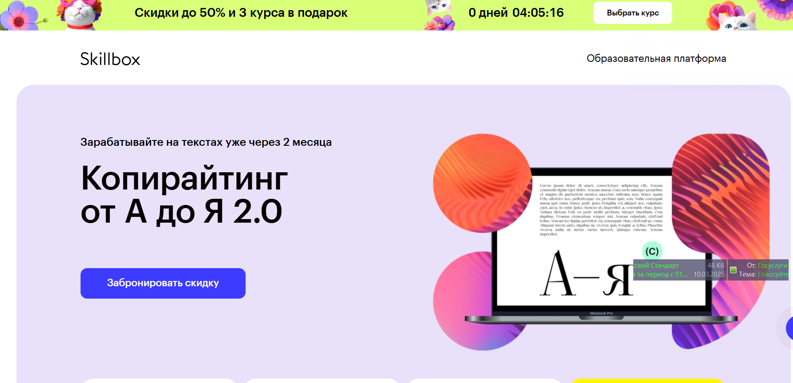
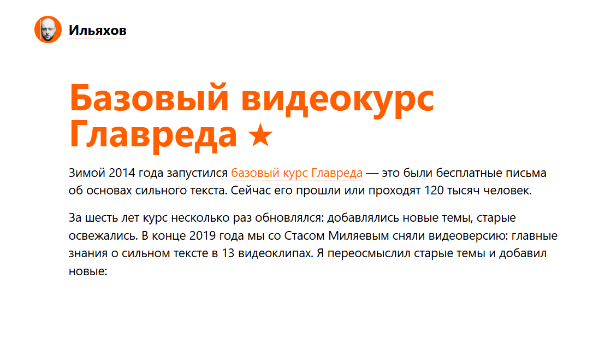

№1 Копирайтинг от А до Я — Skillbox

Ссылка: https://skillbox.ru/course/copywriter/
Стоимость обучения: 2 457 руб./в месяц (доступна рассрочка на 12 месяцев)
Общая сумма: 29 484 руб.
После завершения курса вы получите сертификат, подтверждающий вашу квалификацию, что станет большим плюсом при поиске работы.
В ходе обучения вы научитесь мастерству написания текстов для различных целевых аудиторий, что поможет привлечь внимание и увеличить ваши доходы.
Вам будут доступны чек-листы и примеры, которые помогут создавать качественные тексты.
Кроме того, вы соберёте портфолио из пяти завершенных проектов.
Программа включает практические задания, основывающиеся на реальных кейсах.
Вы получите неограниченный доступ к учебным материалам.
Кому подойдёт данный курс
Начинающим писателям
Вы изучите основы копирайтинга, освоите навыки создания качественных текстов и научитесь собирать информацию и структурировать её так, чтобы заинтересовать читателя.
Специалистам в сфере контента и SMM
Вы овладеете искусством написания эффективных рекламных материалов для соцсетей, email-рассылок и лендингов, что поможет значительно расширить вашу целевую аудиторию и укрепить связь с клиентами.
Студентам и выпускникам гуманитарных направлений
Вы получите практические знания в коммерческом письме и освоите решение конкретных бизнес-задач.
Тем, кто хочет зарабатывать на текстах
Вы познакомитесь с профессией копирайтера, научитесь писать грамотные тексты в различных форматах и находить интересные проекты для начала вашей карьеры.
Чему вы научитесь
Создавать тексты высокого качества.
Вы будете способны работать в различных стилях и форматах, приводя примеры в своих материалах.
Анализировать брифы.
Вы освоите методы быстрого ознакомления с заданиями и эффективного взаимодействия с клиентами.
Создавать контент с учетом целевой аудитории.
Вы узнаете, как учитывать потребности читателей и генерировать востребованные материалы.
Редактировать свои тексты.
Вы научитесь убирать сложные формулировки и лишние слова, создавая уникальные и запоминающиеся материалы.
Презентовать свои идеи.
Вы овладеете подходами к оперативному реагированию на правки и эффективному коммуникации с клиентами.
Составлять портфолио.
Вы поймёте, как правильно выбирать работы для портфолио, обосновывать ценность своих услуг и представлять себя будущим клиентам.
Структура курса
Вас ожидают вебинары и практические занятия по анализу реальных случаев.
8 учебных модулей.
41 онлайн-занятие.
Основы специальности.
Разные форматы текстов — статьи.
Разные виды текстов — карточки.
Форматы текстов — email-рассылки.
Другие текстовые форматы.
Создание эффективного текста.
Взаимодействие с клиентами и организация процессов.
Личный брендинг.
Итоговая работа: написание текстового контента по заданию.
Преподаватели
Сергей Король — контент-директор в Яндексе.
Людмила Сарычева — главный редактор издания «Гладлакс», автор и редактор книг по текстам.
Полина Накрайникова — редактор по развитию в «Горящей избе».
№2 Факультет редактуры и копирайтинга в Geekbrains

Выдается диплом о профессиональной переподготовке.
Образовательная лицензия имеется.
Стоимость: от 2 907 руб./месяц с возможностью рассрочки на 36 месяцев.
Форматы обучения:
Групповые занятия с преподавателем.
Онлайн-лекции и вебинары.
Записи занятий в формате видео.
Длительность курса — 12 месяцев (два занятия в неделю)
Итог — Диплом
4 работы в портфолио.
ГАРАНТИЯ — Трудоустройство после завершения курса.
Кому подходит курс
Копирайтерам
Основная задача любого коммерческого текста — продемонстрировать клиентам, как ваш продукт может решить их проблемы. Вы научитесь делать это понятно и привлекательно.
Тем, кто хочет сменить профессию
Станьте профессионалом, создавая качественные информационные продукты и формируя портфолио для старта карьеры.
SMM-менеджерам и email-маркетологам
Расширьте свои карьерные перспективы, получив навыки работы с текстами в качестве редактора, что повысит вашу продуктивность и показатели конверсии.
Учебная программа
1
Подготовительный этап: определение направления.
Создание текстов.
Работа с информацией.
Редактирование.
Введение в профессию.
2
Юридические аспекты.
Тексты для сети.
Медиа-этика.
Основы авторского права.
Редакция и её основные моменты.
Риски работы с контентом.
Защита прав редактора и копирайтера.
3
Формирование контентной стратегии.
Основы вёрстки.
Создание цифровых проектов.
Аналитика.
Тематика контент-стратегии.
Методы распространения контента.
Контентный план.
Редакционная политика.
4
Работа в команде.
Взаимодействие с заказчиками.
Фриланс.
Роли в команде и распределение задач.
Инструменты проектного управления.
Поиск исполнителей и управление критикой и оплатой.
Бюджет.
Эксперты
Павел Федоров — продакшен-директор КБ «Палиндром».
Создатель Telegram-канала «Паша и его прокрастинация», автор подкастов «Поредачим» и «Что-то горит». Участвовал в разработке спецпроектов для «Лайфхакера», работал в «ВКонтакте», управляя контентом на Profi.ru, также занимал редакторские позиции в «Нетологии».
Татьяна Симакова — главный редактор сайта The Village.
Основатель медиапроекта «Большая деревня», публиковалась на Wonderzine, Colta.ru, OpenSpace и «Афиша Daily».
Вы научитесь создавать эффективные тексты, которые невозможно игнорировать, учитывая различные целевые аудитории и цели, а также успешно продвигая продукты.
№3 Коммерческий редактор/копирайтер — Нетология

Ссылка: https://netology.ru/programs/kontent-menedjer-edpro#/presentation
Формат обучения: видеолекции, вебинары, тесты, онлайн-мастерклассы, финальный проект.
Содержание курса включает базовые модули и выбор специализации.
Работа контент-редактора направлена на решение бизнес-задач: подбор текстовых форматов, формирование команды и создание контентной стратегии, а также оценка её эффективности.
Профессия коммерческого редактора охватывает редактирование, понимание задач и управление процессами.
Кому подходит этот курс
Журналистам, копирайтерам и новичкам в редактировании
Вы погрузитесь в мир digital, начнёте новую карьеру и приступите к работе с контентом для бизнеса.
Маркетологам, специалистам по PR и SMM
Вы изучите стратегии продвижения бренда с помощью контента и взаимодействию с редакционными командами.
Тем, кто планирует смену профессии
Вы научитесь создавать тексты для различных форматов, упаковывать контент, разрабатывать стратегии и управлять редактированием.
Чему вы научитесь
Создавать материалы, соответствующие бизнес-целям
Написание статей для корпоративных блогов и медиа, создание контента для социальных сетей и email-рассылок.
Верстка статей и лендингов
Создание текстов в Tilda, Readymag, Setka, WordPress и формирование полноценной информационной продукции.
Использовать методы сторителлинга
Подбор изображений, соблюдение типографики, написание «чистого» текста.
Оптимизировать редакционные процессы
Планирование работы команды, разработка стандартов редактирования, составление контент-планов и определение показателей эффективности.
Организовывать распространение контента
Определение каналов для продвижения, расчёт бюджета, составление медиапланов.
Работать с аналитикой
Мониторинг показателей с помощью веб-аналитики для оценки эффективности контента и маркетинговых стратегий.
Итоговое задание
Вы создадите стратегию контента или бизнес-план с концепцией специального проекта, основываясь на реальной задаче, или вам предложат учебное задание в случае отсутствия реальной задачи.
Форматы обучения
Курс «Коммерческий редактор с нуля».
Для всех, кто стремится усовершенствовать свои навыки в новой профессии.
8,5 месяца, 330 часов, 52 лекции по 1,5 часа, 27 домашних заданий с оценкой.
Содержание программы:
Работа с текстами.
Упаковка контента.
Специализация: основы контент-маркетинга. Вы научитесь размещать материалы в соцсетях, создавать лендинги, вести корпоративные блоги и составлять email-рассылки, а также разрабатывать стратегию контента.
Возможность оплачивать по частям: 3 785 рублей в месяц на протяжении 18 месяцев.
Итоговая стоимость: 68 140 рублей.
Профессиональный редактор PRO
Это курс предназначен для специалистов, занимающихся текстами и желающих улучшить свои навыки в редактировании. Обучение занимает 7 месяцев и включает 309 или 262 часа занятий в зависимости от выбранной специализации. Программа охватывает 42 или 48 уроков по полтора часа каждый, а также 18 или 12 домашних заданий с обратной связью от преподавателей.
Содержание курса
- Создание контента.
- Мастерство повествования.
- Выбор специализации: основы контент-маркетинга или разработка оригинальных проектов.
Изучите различные форматы контента и их эффективность. Научитесь работать с платформами Tilda, Readymag, Setka и WordPress. Освойте навыки организации команды и превращения вашего проекта в источник дохода.
Мы предлагаем возможность рассрочки: 3 326 рублей в месяц на срок 18 месяцев.
Общая сумма курса составит 59 880 рублей.
Учебная программа
- Основной курс.
- Создание маркетингового контента.
- Редактирование и оформление текстов.
- Искусство повествования.
- Специализации в рамках курса «Продвинутый редактор».
- Разработка контент-стратегий.
- Создание оригинальных проектов.
Коммерческий автор от TexTerra

Сайт: https://teachline.ru/courses/commercial-author/
Цена: 12000-26000 рублей.
Общее время обучения составляет: 14 видеолекций по 1,5 часа
По окончании курса вы получите диплом и рекомендательное письмо, что значительно облегчит поиск клиентов.
Данный курс предоставит вам возможности:
- Быстро освоить новую профессию и начать зарабатывать дистанционно из любого места.
- Повысить стоимость ваших услуг, достигнув уровня, где цена ваших текстов соответствует средней и высокой категории на рынке.
- Научиться создавать тексты для бизнеса. Если вы работаете в сфере маркетинга и у вас нет навыков написания анонсов, рекламных материалов и статей, данный курс точно для вас.
Что вас ожидает:
- 14 видеоуроков продолжительностью по 1,5 часа.
- Проверка домашних заданий и обратная связь от преподавателей.
- Возможность задавать вопросы кураторам.
- Знания и навыки для разработки текстов различных форматов, от статей до лендингов и интервью.
- Основы SEO и интернет-маркетинга.
- Методы редактирования и корректуры материалов.
- Инструменты для поиска клиентов, включая малоизвестные методы.
- Доступ к дополнительным материалам курса и записям лекций на протяжении года.
Структура курса:
Вводный модуль в копирайтинг. Рассмотрим задачи и особенности работы копирайтера в контент-маркетинге, определим его обязанности и возможности карьерного роста, а также ознакомимся с этическими нормами профессии.
Разнообразие текстового контента и его уникальные характеристики. Что делает контент эффективным и современным? Изучим основные типы контента и способы его создания. Тексты для одностраничных сайтов: проанализируем структуру текста для лендинга, его ключевые элементы и формы обратной связи. Обсудим, почему текст для одностраничного сайта критически важен для стратегии. Также рассмотрим внедрение уникального контента в статьи.
Необычные форматы: инфографика, видео, тесты, white paper. Что такое ньюсджеккинг и как его применять? Методы оценки вовлеченности аудитории. Что актуально для сегмента B2C, а что для B2B?
Основы источниковедения. Как правильно подбирать темы, оптимизировать контент и находить достоверную информацию?
Структура и оформление текста. Как по-разному воспринимается печатный текст и контент на веб-странице? Как структура текста влияет на восприятие? Основы HTML для коммерческих копирайтеров. Как грамотно оформлять публикации.
Примеры успешного и неудачного оформления. Стилистические особенности. Как знание стиля помогает создавать привлекательные тексты? Почему важно понимать стилистику, когда редактор вносит коррективы? Как читатели реагируют на тексты, написанные в различных стилях? Какие стилистические приемы стоит изучить?
Журналистика и коммерческое письмо. Сравнительный анализ различий между коммерческими авторами и журналистами. Какие качества значимы для хорошего журналиста? Форматы контента, используемые в журналистике.
Творческое письмо. Упражнения, развивающие литературное мастерство с применением разных техник.
Утренние страницы. Метод от противного. Фрирайтинг: различные подходы к созданию контента. Как писать тексты для соцсетей: посты и рекламные объявления. Основные концепции контента для социальных медиа.
Как разработать структуру рубрикатора и план контента. Обычная структура поста. Форматы контента для разнообразных социальных сетей, таких как Instagram, ВКонтакте и Facebook.
Редактирование и корректура. Принципы самоконтроля: как проверять свои тексты, сохраняя их изначальный замысел? Как вносить коррективы, не нарушая авторского стиля?
Основные правила редактирования. Корректура. Важные аспекты, которые следует учитывать. Как проводить самопроверку и на какие источники опираться по вопросам русского языка? Что делать, если встречаются новые слова, которые еще не включены в официальные словари?
Основы SEO. Как привлекать трафик через поисковые системы? Почему текстовая оптимизация имеет такое значение? Где найти ключевые слова и как грамотно их интегрировать в текст? Как избежать переоптимизации? Основные принципы SEO. Где искать клиентов и как продвигать свои услуги? Как находить прибыльные проекты?
Как уверенно представлять себя и формировать личный бренд? Как создать портфолио и подготовить коммерческое предложение. Практическое занятие. Обсуждение возможных ошибок и ответы на вопросы, которые могут возникнуть в ходе обучения, а также устранение пробелов в знаниях. Практические рекомендации.
Копирайтер для экспертов и онлайн-школ — Ольга Придейная

Сайт: https://prideina-course.ru/
Цены:
Самостоятельное обучение – 22500 р.
Базовый курс – 29500 р.
Расширенный пакет – 45500 р.
Для кого предназначен данный курс
Данная программа подходит для:
- тех, кто желает начать карьеру в области копирайтинга с возможностью удаленной работы;
- людей с креативным мышлением, стремящихся превратить свое увлечение писательством в профессию;
- тем, кто намерен обеспечить себе регулярный доход в условиях нестабильной экономики;
- контент-креаторам в Instagram, желающим улучшить свои способности;
- всем, кто хочет получить не только теоретические знания, но и практический опыт;
- желающим научиться создавать тексты, которые будут хорошо оплачены.
Курс подходит
Начинающим копирайтерам. Вы изучите методики создания текстов для различных платформ, включая лендинги, email-рассылки, лид-магниты и публикации в Instagram. По окончании курса вы сформируете свое портфолио, что значительно упростит поиск работы.
Копирайтерам с опытом. Вы улучшите качество своих текстов, углубите знания о маркетинговых стратегиях и научитесь выгодно представлять свои услуги для увеличения их стоимости, также получите полезную информацию о том, как работает инфобизнес.
Специалистам в области SMM, контент-менеджерам и администраторам Instagram. Вы овладеете навыками написания привлекающих внимание текстов и узнаете, как с помощью написанного контента привлекать подписчиков и повышать продажи. Эти знания помогут вам раскрыть ваш потенциал и увеличить доход.
Формат обучения
Месяц активного обучения с фокусом на практические задания по написанию текстов.
Курс будет осуществляться в онлайн-формате на платформе Getcourse. Каждую неделю будут проводиться живые вебинары, где вы сможете узнать новую информацию. Всего предусмотрено 4 вебинара, на которых у вас будет возможность задавать вопросы и выявлять распространенные ошибки. Если вы не сможете присутствовать на вебинаре, все встречи будут записаны.
На протяжении всего обучения у вас будут доступны видеоуроки и дополнительные материалы, такие как электронные документы: чек-листы, методические пособия и многое другое.
В два раза в неделю вам нужно будет выполнять домашние задания в удобное для вас время.
Вы получите детальную индивидуальную обратную связь в аудиоформате на платформе, чтобы ваши работы были замечены.
Также будет создан чат для участников, в котором можно будет общаться, получать поддержку и задавать актуальные вопросы. В этом чате можно будет общаться не только с автором курса, но и с другими учащимися.
На пятой неделе вы сможете пройти стажировку на реальных проектах (для студентов с тарифами «Базовый» и «Максимальный»), что позволит вам общаться с клиентами и искать вакансии даже во время обучения.
После завершения курса вы получите доступ к Telegram-каналу с актуальными предложениями о работе, что облегчит вам процесс поиска.
Содержание курса
1-я неделя
1-й блок: Искусство написания убедительных коммерческих текстов. Эффективные техники продаж через текст.
Как создать четкий и привлекательный текст.
Структура текста.
Формулы создания успешного контента.
Как заинтересовать читателя с помощью захватывающего начала.
Психология продаж. Продающие элементы в тексте. Как выделить преимущества товара или услуги.
Призыв к действию: как составить его.
Как добиться успеха в продажах, избегая неловких моментов.
2-я неделя
2-й блок: Оформление текста для лендинга.
Создание страницы захвата для вебинара эксперта: структура и важные аспекты.
Как разработать привлекательные заголовки и пояснения.
Применение триггеров.
Элементы текста для лендинга – одна из самых востребованных и прибыльных услуг.
3-й блок: Написание текстов для email-рассылок.
Основные принципы успешного email-маркетинга.
Как правильно формировать email-рассылки для экспертов, чтобы каждое письмо было открыто.
Разнообразие форматов рассылок.
Создание серии писем для вебинаров.
Какие элементы должны быть в письмах.
Роль копирайтера в создании рассылок.
Как оценить результативность email-рассылки и повысить её эффективность.
Методы предотвращения попадания в спам.
3-я неделя
4-й блок: Создание экспертного контента для Instagram.
Как установить близкий контакт с подписчиками.
Основы написания экспертных текстов.
Как найти общий язык с экспертом и адаптировать стиль к его потребностям.
Контентная воронка и клиентские стратегии через посты и истории.
Планирование контента и стратегии продвижения в контексте воронки.
5-й блок: Как привлечь максимальное количество участников на вебинар через Instagram.
Эффективные способы анонсирования вебинаров и привлечения участников с помощью постов эксперта.
Традиционные и оригинальные подходы к подаче информации.
[/spoiler>
Сторителлинг: Искусство составления историй
Способы привлечения внимания аудитории.
4-я неделя
Блок 6: Лид-магниты
Что такое лид-магниты?
Разные виды лид-магнитов и способы, с помощью которых копирайтер может зарабатывать на них.
Основные функции лид-магнитов.
Главные принципы их создания.
Дополнительные занятия:
- Занятие от психолога: «Как преодолеть страхи новичка-копирайтера».
- Занятие: «Создание текста для лендинга с продуктом, за который платят».
- Занятие: «Управление проектами в копирайтинге. Как грамотно организовать задачи и проекты».
- Занятие: «Управление задачами и использование таск-менеджеров».
- Занятие: «Роль контента в продвижении образовательных продуктов».
- Занятие: «Проектирование прототипа лендинга».
- Занятие: «Яндекс.Дзен: эффективное использование возможностей платформы».
- Занятие: «Создание текста для таргетированной рекламы».
Прохождение стажировки (для тарифов «Базовый» и «Максимум»)
5-я неделя
Стажировка (для тарифов «Базовый» и «Максимум»)
О преподавателе курса
Ольга Придеина
- Копирайтер и филолог, автор курсов по копирайтингу.
- Более 5 лет опыта работы в копирайтинге.
- Создатель более 4500 коммерческих текстов на заказ.
- Организатор курсов, обучившая более 600 студентов, среди которых есть специалисты, работающие с популярными блогерами.
Курс копирайтинга

Хотя основные навыки письма формируются еще в школе, не у всех есть способность четко формулировать свои мысли, увереннее взаимодействовать с читателями и достигать поставленных целей через текст.
Копирайтинг — это важный навык для современных профессионалов, который может стать как дополнительным, так и основным источником дохода.
Школа юного копирайтера предлагает курс, посвященный освоению написания коммерческих текстов. Программа охватывает основы копирайтинга, особенности написания для различных форматов и целей, технические требования, советы по редактированию, методы и практические задания, способствующие развитию креативности и повышению качества контента.
Курс включает 8 онлайн-занятий с практическими заданиями. Работая над текстами, вы получите необходимые навыки, обратную связь от преподавателя и возможность ознакомиться с работами коллег.
Занятия проходят онлайн дважды в неделю с 10:00 до 12:00.
Интенсивный копирайтинг-курс

Цена: 8 888 РУБЛЕЙ
Продолжительность: 4 недели
7 обязательных занятий по 1,5-2,5 часа: 6 записанных и 1 онлайн-трансляция.
6 домашних заданий с индивидуальным разбором каждой работы и отслеживанием прогресса.
Структура курса
- Основы качественного текста: научитесь писать свой первый текст, следуя правилам копирайтинга.
- Пример образцового текста: овладейте созданием материалов, которые вызывают положительные эмоции и интерес.
- Анализ ошибок: научитесь выявлять и исправлять ошибки для повышения ясности и выразительности ваших текстов.
- Методы написания: познакомьтесь с простыми подходами, которые упростят процесс создания текста.
- Художественные техники: добавляйте в текст эмоции и создавайте запоминающиеся образы в сознании читателя.
- Нативная реклама и интервью: изучите, как представить продукт так, чтобы привлечь интерес рекламодателей.
Курс по техническому копирайтингу

Общее время обучения: 72 часа.
Цена для физических лиц: 19800 руб.
Цена для организаций: 24900 руб.
Цели обучения
Повышение профессиональных навыков в создании технической документации и анализе в области информационных технологий. Обучение осуществляется в режиме онлайн, что предлагает вам гибкость в выборе времени и даты начала занятий.
Что вы узнаете на курсе и какие перспективы откроются после его завершения?
Для начинающих специалистов мы предлагаем освоить профессию технического писателя и подготовить основные материалы для вашего портфолио.
Вы почувствуете удовлетворение от роста в профессии и получите доступ к огромному объему информации.
После подтверждения ваших знаний и получения сертификата от нашей образовательной организации, вы сможете уверенно планировать свою карьеру. Если вы уже имеете некоторый опыт, но желаете углубить свои навыки или прояснить определённые аспекты, обучение станет отличной основой для этого.
Вы будете получать больше радости от своей работы, что поможет вам успешно справляться с более сложными проектами.
Учащиеся, которые уже работают в качестве технических писателей и готовы к критике, смогут заметить свои слабые стороны и поработать над ними в процессе занятий.
Помимо новых знаний, вы откроете для себя возможности карьерного роста, ведь стремление к самосовершенствованию всегда ценится!
Процесс обучения: Содержание курса
- Введение в профессию:
- Пути становления техническим писателем.
- Правовые аспекты профессии.
- Типы документов и их целевая аудитория.
- Стандарты оформления документации и статей.
- Специфика стиля технической документации.
- Основы разработки технического контента.
- Методы оформления документации для ПО и устройств.
- Написание научных и аналитических статей.
- Создание видео и слайдов для презентаций.
- Описание технических схем и кода.
- Составление технических заданий и маркетинговых текстов.
- Работа с переводами и создание контента для веб-сайтов.
- Знакомство с необходимыми инструментами и функциями редактора.
- Процесс разработки документации и ныне действующие стандарты.
- Самостоятельное изучение возможных направлений.
- Проверка документации на соответствие требованиям.
- Итоговое задание: разработка документа, обзорной статьи или презентации.
Последний курс по копирайтингу
Содержание курса
- Письмо — это постоянный процесс. Обучение включает не только вебинары с теоретическим контентом.
- 49 видеоуроков: получите доступ к записям в любое время с возможностью повторного просмотра.
- Личный кабинет, с доступом с любых устройств и удобным форматом учебного материала.
- Каждый урок содержит задания для закрепления пройденного.
- Ответы на ваши вопросы в течение суток, возможность получения индивидуального отзыва по запросу.
- Практические примеры — снижаем теорию для актуальной информации.
- Неограниченный доступ к обучающим материалам — учитесь в собственном темпе.
- Формирование вашего портфолио с рекламными текстами для выбранного контента.
- Онлайн-вебинары, на которых анализируются ваши работы и обсуждаются способы их улучшения.
- Возможность самостоятельной работы с обратной связью по вашим текстам.
- Поддержка групповых обучений и обсуждений написанных материалов.
Присоединиться к группе можно в любой момент, количество участников не ограничено. Каждый может выбрать свой индивидуальный темп обучения. Главной частью нашего формата являются еженедельные встречи по воскресеньям, на которых мы обсуждаем ваши работы. Если вы пропустили занятие, не переживайте! У вас всегда есть возможность вернуться и ознакомиться с записями.
ИЛИ ИНДИВИДУАЛЬНЫЕ ЗАНЯТИЯ СО МНОЙ ПО SKYPE
В этом формате мы используем индивидуальный подход: вы получите анализ каждого задания в рамках консультации по Skype и сможете освоить дополнительные техники с учетом ваших потребностей. Этот вариант подходит не всем, так как требует больше времени и финансовых ресурсов. Если ваше время ограничено, эффективнее заниматься в группе.
Авторский Курс — Надежда Сокирская

Сайт: https://sokirskaya.ru/
Длительность: 6 недель обучения
ЦЕНА КУРСА:
Базовый — 35000 руб
Больше практики — 46000 руб
Максимум практики — 85000 руб
Какова цель курса?
Курс будет полезен тем, кто стремится обучиться написанию коммерческих текстов даже без практического опыта. Если вы пишете и готовы учиться, за шесть недель вы получите необходимые основы профессии, наработаете опыт работы с реальными клиентами и создадите свое портфолио.
Тем, кто уже занимается написанием текстов и хочет увеличить свой доход, программа поможет выявить уже имеющиеся сильные и слабые стороны, проанализировать ошибки, освоить современные подходы и поднять уверенность в своих силах. Вы научитесь производить контент, который привлечет клиентов и сделает вас востребованным автором для блогеров, продюсеров и предпринимателей.
Формат занятий
Курс состоит из шести недель интенсивной работы с уроками по будним дням и выполнением 12 домашних заданий. Участники делятся на группы по 10-12 человек под руководством куратора. Все работы рецензируются куратором, предоставляется подробный фидбэк и работа над реальными проектами с отзывами от клиентов. Вы создадите актуальное портфолио на платформе Tilda и получите доступ к поддерживающему Telegram-каналу с коучем, а также сможете накапливать баллы для получения призов.
Содержание курса
Вводный раздел. Доступ сразу после оплаты.
Поиск работы. Доступ на второй неделе курса.
Базовые навыки копирайтера.
Тексты, способствующие увеличению продаж. Практика с реальными клиентами.
Контент для социальных сетей. Работа с клиентами.
Формирование портфолио. Подведение итогов изученных тем.
Специальный модуль-тренажер для практики взаимодействия с клиентами.
О преподавателе
Надя Сокирская
журналист, редактор и блогер. Выпускница Литературного института, известного высоким качеством подготовки. Более десяти лет проработала в СМИ: начиная с редактора на радиостанциях «Русская служба новостей» и «Говорит Москва», позже стала выпускающим редактором сайта «Комсомольская правда». С 2014 по 2017 год занимала должность главного редактора Леди.Mail.Ru. Читала лекции по интернет-журналистике в МГУ; имеет опыт работы с журналистами и взаимодействия с авторами. Создала блог, который быстро собрал более 100 тысяч подписчиков, также преподавала в школе телевидения «Останкино ТВ».
КУРАТОРЫ
Наталья Семенова
Редактор PR-службы Правительства Москвы. Ранее работала редактором на aif.ru и шеф-редактором телеканала «Звезда».
Алена Костомарова
Шеф-редактор и заместитель руководителя спецпроектов МИА «Россия сегодня». Помогает компаниям в продвижении услуг и решении бизнес-задач. Имеет 14-летний опыт работы с текстами и сотрудничала с изданиями, такими как Geo и РБК.
Конструктор продающего текста от Школы копирайтинга Дениса Каплунова
Сайт: https://deniskaplunov.com/kpt/
Цена:
Стандарт: 18 525 руб
Премиум: 37 275 руб
В течение полутора месяцев изучения более 70 примеров вы освоите 100 самых эффективных копирайтинговых приёмов, что позволит вам увеличить конверсию ваших текстов минимум в три раза.
Кому будет полезен этот курс?
Предпринимателям и бизнесменам
Вы будете способны создавать текстовый контент, который привлечет в 3–5 раз больше клиентов и значительно повысит вашу прибыль.
Копирайтерам (как независимым, так и штатным)
Вы сможете улучшить свои навыки, освоить новые подходы и существенно повысить свою продуктивность, что приведет к увеличению дохода.
Консультантам и экспертам
Вы научитесь создавать тексты, способствующие продвижению ваших услуг, что увеличит средний чек и доходы.
Маркетологам и менеджерам по продажам
Вы овладеете важными навыками, которые обеспечат вам конкурентные преимущества и значительно улучшат результаты.
Что вас ждет на курсе?
Полтора месяца обучения
100+ методик копирайтинга
Проверка домашних заданий
70+ примеров текстов
Гибкий график обучения
18 видеолекций
Конспекты всех занятий
Дополнительные материалы
СОДЕРЖАНИЕ КУРСА
«Заголовки»
#1
Ключевые вопросы, возникающие при создании заголовков.
Три главные функции заголовка.
Как привлечь внимание с помощью подзаголовка.
Примеры эффективных подзаголовков в продаже.
20 формул написания результативных заголовков.
Когда подзаголовок уместен и его основные функции.
20 примеров сочетания «Заголовок + Подзаголовок».
В конце: вы научитесь разрабатывать привлекательные заголовки, которые привлекают внимание и заинтересовывают в тексте.
«Вводная часть»
#2
Причины, по которым 80% текстов потеряют читателя.
Формула для привлечения интереса аудитории.
5 задач вводной части текста.
Роль микро-заголовков.
7 техник создания мини-заголовков и 34 примера.
10 основных подходов к написанию вводной части рекламного текста.
10 оригинальных методов для начала текста.
В итоге: вы получите навыки создания продающих вводных, которые вызовут доверие и интерес читателя.
«Описание и представление»
#3
Эффективность принципа «Тройной выгоды».
Методы обновления устаревших товаров.
Методы двухступенчатого представления товара.
Уникальное коммерческое предложение в 10-20 словах.
14 способов представления продукта или услуги
Дополнительный слоган для укрепления вашего сообщения + 7 оригинальных идей.
Итог: вы создадите индивидуальное коммерческое предложение и станете мастером в выделении ваших сильных сторон для привлечения внимания на рынке.
Формирование успешных деловых кейсов и вдохновляющих историй
Как статистика может служить опорой для ваших заявлений.
Инструменты, подчеркивающие вашу профессиональную квалификацию.
16 способов аргументации с примерами наглядного характера.
Результат: вы умеете выбирать сильные доказательства, успешно опровергать сомнения и аргументы, подтверждая эффективность вашего предложения.
«Предложение цены»
#5
Основы «ценовой продажи».
Методы формирования текста при отсутствии заранее установленной цены.
Стратегии использования сравниваемых цен.
5 приемов работы с тарифами.
4 типа гарантий и 9 примеров их применения.
Способы обоснования ценности.
Вывод: вы станете экспертом в создании ценовых предложений, чтобы клиент сам осознал преимущества вашего сотрудничества.
«Заключительная часть текста»
#6
Способы завершения продающего текста без снижения конверсии.
Формула, побуждающая клиентов к действию.
Воздействие специальных предложений на итоговые результаты.
15 примеров успешных окончаний рекламных текстов.
В результате: вы освоите нюансы завершения своих текстов, вызывая у читателя стремление оперативно начать сотрудничество.
Как осуществляется процесс обучения?
Первоначальный этап
Вы получите доступ к образовательной платформе с курсом материалов.
Образовательные ресурсы
Постепенно изучаете видеоуроки для каждого модуля (теоретическая база и практические примеры).
Практическое задание
Завершаете задания и отправляете их для проверки.
Оценка
Преподаватель анализирует вашу работу и предоставляет рекомендации.
Консультации
Доступ к двум консультациям от Дениса Каплунова (в пакете «Премиум»).
Авторы курса
Денис Каплунов
Неизвестный, но высококвалифицированный эксперт в копирайтинге, контенте и маркетинге.
Восстановил свою репутацию благодаря серьезному подходу к текстам.
Имеет 12-летний опыт создания коммерческого контента.
Успешно завершил более 4000 проектов для более 700 клиентов.
Сотрудничал с более чем 100 компаниями в разных отраслях.
Основатель агентства «Студия Дениса Каплунова».
Что вы получите по завершении курса
- Бонус 1 — Мини-курс «Копирайтинг XXI века»
- Бонус 2 — Набор из 10 чек-листов
- Бонус 3 — Мастер-класс «SOLD OUT»
- Бонус 4 — Мастер-класс «Клиенты из соцсетей»
- Бонус 5 — Мастер-класс «15 упражнений по копирайтингу»
- Бонус 6 — Мастер-класс «Коммерческое предложение на одну страницу»
- Бонус 7 — Мастер-класс «Переписка с клиентами»
«Базовый курс Главреда» от Максима Ильяхова

Курс постоянно обновляется: новые темы и усовершенствованные старые. В конце 2019 года было запущено сотрудничество с Стасом Миляевым, что привело к появлению видео-версии, включающей ключевые знания по созданию эффективных текстов в 13 коротких видео. Прежняя информация была обновлена и пополнена новыми элементами:
- Использование Главреда
- Анализ информационного стиля
- Опасные слова
- Вводные конструкции
- Оценочные фразы и усилители
- Штампы
- Сложные предложения
- Синтаксис
- Канцеляризмы
- Кинематографические приемы
- Уточнения
- Однородные члены предложения
- Ясность изложения
- Эффективная коммуникация
- Практическая ценность текста
- Контексты
- Подходы к дальнейшим шагам
Углубленный 2-месячный курс ИНТЕРНЕТ-ПРОФЕССИЯ КОПИРАЙТЕР 2.0 от Натальи Реген
Сайт: https://infovoronka.ru/ipk2-0-price-special Цена: Пакет «Базовый» — 13990р, Пакет «Стандарт» — 20990р, Пакет «Премиум» — 40990р
Как проходит процесс обучения?
Модуль 0
Подготовительный этап
На этом начальном этапе мы наладим связь. Вы ознакомитесь со структурой курса и методами обучения. Обсудим ключевые принципы маркетинга, необходимые любому копирайтеру. Тщательно разберем роль копирайтера и формулу «Т», применяемую в работе. Кроме того, вы узнаете, как найти своего первого клиента для стажировки, что позволит получить ценный опыт сотрудничества с реальными заказчиками.
Модуль 1
Статьи и материалы для сайтов
Какие форматы и виды статей нужно уметь создавать?
Шаблоны для различных категорий статей.
Практические задания по написанию ваших первых статей для портфолио.
Основы написания текстов для заполнения сайта: главная страница, страницы категорий, страницы услуг, страницы о компании и многих других.
Как создать структуру любого текста: практическое занятие.
Модуль 2
Продающие тексты
Вы ознакомитесь с типами и форматами рекламных текстов.
Рабочая тетрадь с рекомендациями по структурированию текстов для экономии времени.
Формулы наиболее популярных рекламных текстов.
Практическое задание: создание продающего текста для вашего портфолио.
Модуль 3
Социальные медиа
Как организовать сторителлинг?
Создание контент-плана для клиента.
Как писать тексты для социальных сетей?
Размещение контента.
Методы подготовки аудитории к покупкам.
Рекламные и продающие посты.
Модуль 4
Рассылки, чат-боты и автоматизация воронок продаж
Как разработать стратегию рассылок (с примерами и шаблонами)?
Алгоритм написания пяти типов писем.
Создание автоматических воронок: теоретическая и практическая части.
Как разработать чат-бота: услуги от 15 000 рублей.
Модуль 5
Упаковка услуг и самопрезентация
Как составить бриф, описывающий порядок работы с клиентом?
Как правильно оформить портфолио.
Как разрабатывать примеры работ.
Как создать профессиональную страницу, группу или сайт для продвижения личного бренда.
Модуль 6
Поиск клиентов и получение заказов
Как находить платежеспособных клиентов?
Три наиболее эффективных способа привлечения долгосрочных клиентов.
Как уверенно вести переговоры, демонстрируя профессионализм?
Лучшие платформы для поиска клиентов.
Готовые образцы для общения с заказчиками — что написать, чтобы привлечь их внимание к вашим услугам.
Модуль 7
Определение специализации для увеличения дохода
Как выбрать правильное направление?
Основные направления в копирайтинге.
Выбор специализации: автоворонки, услуги, контент-маркетинг, интернет-магазины, онлайн-курсы.
Модуль 8
Комплексные предложения для клиентов
Как составлять повторные предложения клиентам для увеличения дохода от одного проекта?
Как правильно предложить клиенту комплексное решение: пошаговая инструкция.
Система привлечения заказов на сумму свыше 10 000 рублей за один проект.
Финальный этап
Аттестация для получения сертификата.
План профессионального развития: пути дальнейшего роста.
Личная система увеличения доходов.
Формат обучения
Занятия на платформе.
Постоянные обновления.
Вебинары с ответами на вопросы.
Поддержка наставника.
Удалённая профессия Копирайтер — Артур Грант и Вероника Головченко / Profi Internet
Сайт: https://copywriting.artur-grant.ru/ Продолжительность: 2 недели Формат: онлайн Цена: бесплатно
Что вы получите?
Вы можете пройти двухнедельный курс по копирайтингу совершенно бесплатно и начать зарабатывать удаленно, создавая тексты в соответствии с установленными требованиями.
Авторы курса
Артур Грант — соавтор курса и основатель школы Profi-Internet. Копирайтер с семилетним опытом, который за год карьеры поднялся от низкооплачиваемых заказов — от 2 до 3 долларов за текст до ощутимых 200-400 долларов. Тексты Артура принесли более 28 миллионов рублей дохода за последние три года.
Вероника Головченко — опытный коуч с более чем семилетним стажем в области копирайтинга. Она обучила свыше 1000 человек как на курсах, так и в рамках индивидуальных занятий.
Специалист по копирайтингу
Сайт: https://copy2.0.profiinet.ru/ 3-месячный онлайн-курс. После завершения вы получите сертификат. Цена: пакет «СТАНДАРТ» — 9 900 руб/мес, пакет «VIP» — 15 900 руб/мес
Что вас ждет по завершении курса?
- статус сертифицированного эксперта
- упакованность как специалист с полноценным портфолио и личным сайтом
- полное владение всеми аспектами работы и готовность решать любые сложные задачи (включая создание продающих текстов) от 5000 рублей
- Способность привлекать клиентов с высокими бюджетами и организовать систему рекомендаций, чтобы они обращались к вам самостоятельно.
- Уверенность в собственных возможностях (прошлые страхи и сомнения останутся позади).
- Реализация личных амбиций (финансовых перспектив, стремление к свободе, переход к любимой деятельности).
Структура курса
Модуль 01
4 недели
Мастерство написания текстов
- Ключевые инструменты для копирайтеров
- Различия между LSI и SEO-копирайтингом
- Особенности создания SEO-текстов для интернет-магазинов
- Правила оформления текста
- Важные термины: сниппет, хлебные крошки, метатеги
- Дизайн текстового контента
- Создание контента для социальных сетей
- Методы мышления для упрощения выполнения задач
Модуль 02
1 неделя
Поиск первых клиентов на фриланс-площадках
- Получение информации о лучших платформах для копирайтеров
- Создание профиля для привлечения заказчиков
- Как эффективно формировать отклики и начинать зарабатывать
Модуль 03
4 недели
Формирование привлекательного портфолио
- Создание интересного портфолио с нуля
- Определение стоимости ваших услуг
- Выявление вашего уникального торгового предложения (УТП)
- Поиск клиентов вне платформы: методы привлечения и взаимодействия
Модуль 04
4 недели
Искусство написания эффективных рекламных текстов
- Брифинг
- Анализ целевой аудитории, конкурентов и товара
- Важные формулы успешного копирайтинга
- Пошаговая методика создания маркетинговых материалов
- Сторителлинг
- Разработка лендингов
- Email-маркетинг
Модуль 05
1 неделя
Мастер-класс по составлению комментариев, способствующих росту продаж
Индивидуальный подход к работе с конкретными текстами.
Нахождение высокооплачиваемых клиентов
- Создание удачных кейсов
- 11 стратегий поиска клиентов от Артура Гранта
- Активные и пассивные методы привлечения клиентов
- Поиск клиентов как в интернете, так и в оффлайне
- Построение стратегического партнерства
Модуль 06
Неделя 1
Профессиональная упаковка ваших услуг
- Определение вашей профессиональной специализации
- Выбор области работы
- Создание уникального наименования (брендинга)
- Разработка персонального сайта
Знакомьтесь с авторами тренинга
Артур Грант
- Соавтор программы, маркетолог и копирайтер, основатель школы Profi-Internet
- В начале карьеры зарабатывал $2-$3 за текст, позже достиг уровня $200-$400
- За последние пять лет его доход составил более 140 миллионов рублей
Вероника Головченко
- Соавтор курса и тренер с более чем 8-летним опытом в копирайтинге
- Обучила более 1200 студентов, многие из которых стали профессиональными копирайтерами
- Тексты Вероники принесли более 7 миллионов рублей
Кому этот курс будет полезен?
Начинающим:
Научитесь одному из самых высокооплачиваемых навыков 2019-2020 годов. Работайте из любой точки мира с гибким графиком и стабильным доходом.
Новым копирайтерам:
Станьте настоящими профессионалами, преодолевая финансовые трудности и формируя постоянный поток клиентов.
Специалистам SMM, SEO, дизайнерам и маркетологам:
Расширьте свои предложения, предоставляя клиентам комплексные решения и увеличивая свою рыночную ценность.
Предпринимателям:
Экономьте средства, отказываясь от дорогостоящих решений в пользу качественных специалистов.
Школа копирайтинга — Мария Солодар

Сайт: https://solodar.com/copywriting-school/ Обучение продлится два месяца. По окончании курса вам будет выдан сертификат. СТОИМОСТЬ — 59 900 РУБ.
Для кого подойдет этот курс?
Тем, кто ищет работу:
Стремящимся зарабатывать более 100 000 рублей, работая из любой точки мира и желающим получить финансовую независимость.
Бизнесменам:
Тем, кто желает запустить прибыльное новое направление в своем бизнесе.
Маркетологам:
Тем, кто хочет расширить пакет своих услуг и воздействовать на клиентов через написанные тексты.
Новичкам:
Тем, у кого нет опыта писательства, но есть желание заниматься этим с целью получения прибыли.
Что вы освоите в ходе обучения?
Вы научитесь писать действенные тексты, включая письма, лендинги, рекламные материалы и коммерческие предложения. Также вы получите навыки создания постов для соцсетей, которые способствуют развитию вашего блога и увеличению продаж. Вы освоите написание материалов, которые побуждают клиентов немедленно принять решение о покупке.
Изучите экспертизу, как повысить доходность проекта с помощью качественного контента. Узнайте, как применять психологические приемы для убеждения даже самых недоверчивых клиентов. В ходе обучения вы поймете, как выстраивать долгосрочные отношения с клиентами и стабильно зарабатывать более 100 000 рублей в месяц.
Структура курса
МОДУЛЬ №1
Вступление: ознакомление с профессией и организационные действия
- Договор-оферта
- Что такое копирайтер? Основные аспекты профессии и подготовка к ней
- Использование личного кабинета и подача домашних заданий
- Обработка брифа — ключевой этап создания любого маркетингового текста
Дополнительные материалы:
- Шаблон брифа для копирайтера
Результаты модуля:
- Вы усвоили ключевые принципы копирайтинга
- Вы выбрали проект для практической работы
- Вы научились работать с обучающей платформой
- Вы освоили подготовку брифа
МОДУЛЬ №2
Психологические аспекты копирайтинга
- Главные характеристики для создания качественного контента
- Как воздействовать на действия читателя: 33 триггера, полезных для копирайтеров
- Сторителлинг как основная методика написания убедительных рассказов
Дополнительные материалы:
- Психология влияния в бизнесе и продажах
- 30 умственных триггеров с примерами текстов
- Руководство по созданию портрета целевой аудитории
- Инструкция по построению аватара
- Примеры проблем, с которыми может встретиться аватар
Результаты модуля:
- Вы ознакомились с основами копирайтинга
- Научились эффективно использовать триггеры
- Создали портрет целевой аудитории и аватара
- Написали продающую историю для вашего проекта
МОДУЛЬ №3
Формулирование уникального предложения и создание эффективного оффера
- Разработка уникального торгового предложения и эффективного оффера
- Создание заманчивых рекламных заголовков для привлечения внимания
Дополнительные материалы:
- Уникальное торговое предложение и формулировки ценностей
- Примеры успешных офферов
- Специальная формула для создания предложения
- Примеры офферов, использующих уникальные техники предложения
Результаты модуля:
- Сформируете декларацию ценностей для вашего проекта
- Создадите эффективный оффер по специальной формуле
- Разработаете привлекательные рекламные заголовки
МОДУЛЬ №4
Проектирование лендингов и составление коммерческих предложений
- Методы создания лендингов: создание целевых и конверсионных страниц с высокой эффективностью
- Изучение коммерческих предложений и маркетинг-китов
Дополнительные материалы:
- Анализ платформы Mottor
- Пример разработки лендинга с помощью Tilda
- Ключевые элементы лендинга: предложение, описание, призыв к действию
- Инструкция по созданию лендинга
- Шаблон для создания подписной страницы
- Пример прототипа продающей страницы в Google Docs
- Инструкция по использованию Google Docs
- Коммерческое предложение и маркетинг-кит
- Схема «21 вопрос для упаковки» от Лебедева
- 117 вопросов для упаковки
Результаты модуля:
- Создадите макеты страниц в конструкторе
- Подготовите коммерческое предложение для вашего проекта
- Научитесь формировать коммерческую презентацию
- Представите свой маркетинг-кит в качестве копирайтера
МОДУЛЬ №5
Основы email-маркетинга и написание эффективных писем
- Ключевые принципы email-маркетинга для организации результативных рассылок
- E-mail как универсальный инструмент продвижения
- Правила написания продающих писем
- Создание интересного коммерческого контента для социальных сетей
- Технические аспекты настройки автоматизированной рассылки через сервис GetResponse
Дополнительные ресурсы:
- Мастер-класс «Техника касаний»
- Руководство по составлению писем для email-стратегий
- Инструкция по разработке воронок продаж
- Примеры стратегий в области email-маркетинга
- Видеоуроки по использованию программы Xmind
- Список рекомендаций по написанию и оформлению электронных писем
- Руководство по созданию и оптимизации серии электронных писем
- Образцы электронных писем
- Секреты успешного email-маркетинга (урок от GetResponse)
Основные результаты модуля:
- Вы освоите создание писем, которые будут получать высокий уровень открытия
- Разработаете стратегический подход к email-маркетингу для своей организации
- Создадите комплекс сообщений, включая рекламные материалы
МОДУЛЬ №6
Копирайтинг для социальных платформ и мессенджеров
- Создание контента для Instagram: описание профиля, публикации и рекламные посты
- Оформление страниц и привлечение подписчиков на Facebook
- Разработка увлекательного и коммерчески ориентированного контента для социальных медиа
- Копирайтинг для мессенджеров
БОНУС: Психологические аспекты продаж в социальных медиа
Дополнительные материалы:
- Гид «Основы написания постов»
- Примеры оформления профилей
- Достоинства и недостатки Facebook
- Образцы цепляющих и интересных постов
- 5 типичных ошибок при создании публикаций
- Искусство рассказа истории
- Структура успешной истории для продаж
- Пошаговое руководство по написанию историй
- Примеры удачных историй
- 7 советов для рассылок в мессенджерах
Итоги модуля:
- У вас получится грамотно настроить профили ваших проектов на Instagram и Facebook
- Вы научитесь анализировать успешные страницы в социальных сетях и узнаете, что обеспечивает их успех
- Создадите последовательность увлекательных постов
- Исследуете различные форматы контента для мессенджеров
- Научитесь составлять сообщения, которые подходят для мессенджеров
МОДУЛЬ №7
Копирайтинг для видео материалов
- Создание сценариев для рекламных роликов
- Разработка сценариев для вебинаров «Запуск по Волкеру»
Дополнительные материалы:
- Пример сценария для видео
- Образец рекламного видеоролика по эротическому танцу
- Сценарий для «Одноразового предложения» (OTO)
- Сценарий для промо-рекламы
- Пример OTO
- Как подготовить презентацию для успешного вебинара или выступления
- Шаблон презентации для продаж в Google Презентациях
Ключевые итоги модуля:
- Вы разработаете сценарий рекламного видео для вашего товара
- Изучите техники успешных запусков и создадите сценарии для видео о своем продукте
- Создадите структуру презентации для своего проекта
МОДУЛЬ №8
Итоговый проект
Вы получите сертификат
Ваш БОНУС за отзыв о Школе копирайтинга
Итоги модуля:
- В конце курса вы получите готовые образцы и шаблоны, облегчающие написание любых текстов
- Сертификат будет выдан по результатам успешной защиты проекта
БОНУСНЫЙ БЛОК
- Где искать клиентов и как повысить свою ценность как новичку
- Ценовой диапазон услуг копирайтера: как адекватно оценить свои услуги для клиента?
- Как найти удаленную работу в компании мечты: от написания резюме до собеседования в онлайн-формате
- Налогообложение для фрилансеров и самозанятых: ключевые аспекты
СПИКЕРЫ
Мария Солодар
Эксперт в области интернет-маркетинга, продюсер онлайн-проектов и успешный предприниматель.
Олег Баша
Генеральный директор GetResponse в России, профессионал в области email-маркетинга.
Информационный стиль и редактура текста от Бюро Горбунова

Посетите сайт: https://bureau.ru/educenter/text/
Учебный план
День первый: работа с текстами
- Разнообразие информационного стиля
- Основы редактирования текстов
- Понятие информативности
- Стоп-слова: их значение
- Практическое задание: выявление стоп-слов в текстах
- Факты как основа аргументации
- Практика: выбор фактов для улучшения текста
- Ошибки авторов на разных уровнях: новички, опытные и мастера
- Практическое задание: повышение информативности текста о компании
День второй: структурирование предложений и абзацев
- Степень информационной насыщенности абзацев
- Использование активного залога в предложениях
- Основы пунктуации
- Практика: редактирование на уровне предложений
- Логика конструкции абзаца и метод «капралов»
- Практика: редактирование на уровне абзацев
- Создание заголовков и подзаголовков
- Использование списков
- Логичное представление мысли
- Корректировка и изменение структуры
- Практика: структура статьи
- Ритм текста
- Обучение через текстовые материалы
- Практика: написание блога
День третий: создание информационного продукта
- Что делает текст успешным? Формула успеха
- Искренность, манипуляции и лесть
- Адаптация к целевой аудитории
- Синтаксис для иллюстраций
- Риски использования неподходящих иллюстраций
- Практика: выбор иллюстраций для статьи
- Идеальные члены предложения
- Язык пользователей и технологии
- Практика: составление публичного заявления
- Контрастный подход: акцентирование внимания
- Параллельное изложение. Текст в сокращениях и заметках
- Тексты для различных носителей: бумага, ПК, мобильные устройства
- Технозависимость. Проблемы с неэффективными страницами
- Практика: параллельное изложение
- Структура информативной статьи
- Практика: подготовка к публикации статьи
День четвертый: рекламный текст
- Принцип высокой полезности
- Реклама, которую будут рекомендовать
- Эффективный заголовок рекламного текста
- Структура рекламного текста
- Эмоции клиента в рекламе
- Методы создания рекламного контента: плохие и хорошие подходы
- Умные гарантии
- Работа с аргументами и отзывами
- Обратная связь от клиентов
- Метод «Ловля на крючок»
- Длинные и короткие промостраницы
- Текст для страниц продукта в интернет-магазине
- Создание текста, который будет полезен как пользователям, так и поисковым системам
- Практика: разработка длинной промостраницы
- Обобщение: методика написания текста
- Тонкости редакционной работы
- Инструменты редактирования и правила редакционной политики
- Польза и вред текста: когда стоит избегать написания
Автор и преподаватель курса
Максим Ильяхов
Главный редактор бюро с 2009 года, создатель «Главреда», автор рекомендаций по редактированию и информационному стилю, имеет степень кандидата педагогических наук.
«Инициал» от Lifehacker.Ru

Посетите сайт: https://lifehacker.ru/special/initial/
Стоимость: курс бесплатно
Создание качественных текстов становится доступным, если у вас есть желание, время и готовность к практике. Ключевым моментом является наличие опытного наставника.
Редакция Лайфхакера станет вашим проводником в мире письма. Мы проанализировали и отредактировали множество статей, сформировав свой опыт, который теперь готовы поделиться с вами через регулярные рассылки.
Курс состоит из 12 писем, которые будут приходить каждую неделю. Каждое письмо включает теоретические материалы и множество примеров.
Вы сможете освоить:
поиск интересных тем;
Школа копирайтинга — Ольга Соломатина
Продолжительность: 2 месяца. Стоимость: 24900р.. Диплом установленного образца по окончании курса.
В нашем онлайн-центре вы освоите одну из самых востребованных профессий современности и сможете зарабатывать, работая из дома или из любого удобного места, даже если вы ухаживаете за детьми.
Обучение в Школе копирайтинга охватывает три ключевых области:
- Навыки взаимодействия с клиентами.
- Теоретические и практические аспекты копирайтинга и маркетинга.
- Компетенции в области самопрезентации и поиска высокооплачиваемой работы.
Учебная программа
1. Эффективное взаимодействие с клиентами. В процессе обучения вы будете заниматься практическими заданиями и зарабатывать за это. Мы рассмотрим, как и где копирайтеру находить проекты. Вы научитесь составлять технические задания как самостоятельно, так и в сотрудничестве с клиентом. Освоите умение формулировать правильные вопросы для уточнения требований заказчика. Познакомитесь с этапами согласования текстов. Поймете, кто является вашей целевой аудиторией и с кем лучше избегать сотрудничества. Изучите способы разрешения конфликтных ситуаций с клиентами и их предотвращения. Поговорим о том, что означает недовольство клиента, когда он говорит: «Мне это не устраивает». Научитесь обсуждать комментарии и предлагать корректировки. Узнаете, что делать, если заказчик не укладывается в сроки.
2. Теоретические и практические аспекты копирайтинга и маркетинга. В процессе обучения вам предстоит активно участвовать в написании и редактировании текстов, что является одним из лучших способов освоить необходимые умения. После выполнения заданий я предоставлю обратную связь и объясню, по каким причинам целесообразно вносить указанные изменения. Вы откроете для себя ресурсы, которые помогают копирайтерам в поиске информации, и освоите различные методы ее поиска. Мы ознакомимся с более чем 20 видами материалов и научимся находить наиболее подходящие для решения ваших задач. Вы будете писать тексты в различных стилях: информационном, деловом, научном, художественном и других. Научитесь работать с различными жанрами — от публикаций в социальных сетях до аналитических статей и эссе. Мы разберемся в 12 типах пресс-релизов. Вы получите навыки редактирования как собственных, так и чужих работ. Ознакомитесь с терминами, такими как канцеляризмы, стоп-слова и шаблоны, и поймете, как их правильно использовать. Ошибки в написании и пунктуации будут проанализированы с помощью корректур Издательского дома «КоммерсантЪ». Мы различим копирайтинг и журналистику, а также научимся проводить и оформлять интервью. Вы получите основные знания о стилистике. Специалист в области маркетинга расскажет вам о рекламе, воронке продаж и уникальных торговых предложениях, а я дополню информацию о создании продающих текстов и нативной рекламе. Вы научитесь создавать контент, связанный с компаниями, мнениями экспертов, обзорами и отзывами. Мы изучим способы работы с возражениями. Также проанализируем графику текстов и страниц. Научимся основам сторителлинга и правилам адаптации контента для разных социальных сетей. Вы овладеете навыками составления привлекательных заголовков и подзаголовков. Поговорим о том, как правильно описывать изображения и упрощать сложные тексты, когда это возможно. Совместно с веб-разработчиками мы исследуем структуру целевых страниц. Обсудим, когда целесообразно использовать таблицы и графические элементы, вместо текста. Мы пригласим юристов Издательского дома «КоммерсантЪ» обсудить вопросы авторского права, согласования цитат и комментариев. Вы узнаете, что такое сюжет и как его создавать, что поможет вам формировать цепочки коммуникаций и удерживать внимание вашей аудитории. Освоите стратегии ответов на возражения и негативные комментарии под публикациями. Поймете, как переводить устную речь в письменный формат. Мы установим критерии качества текстов.
3. Навыки самопрезентации и поиска высокооплачиваемой работы. Вы получите представление о том, как формируются редакционные стандарты. Научитесь корректно представлять себя, разрабатывая резюме и портфолио. Подготовите сопроводительные письма. Освоите методы получения отзывов и рекомендаций. Узнаете, как редактировать тексты других людей, избегая конфликтов. Научитесь справляться с перфекционизмом и критическим внутренним голосом. Осознаете реальную ценность своих услуг на рынке. Поймете, что именно «продает» копирайтера. Обсудим, как преодолевать страхи, связанные с повышением цен, и как корректно отказываться от проектов, если это необходимо. Научитесь писать регулярно. Узнаете, как избежать эмоционального выгорания. Поймёте, что дедлайны могут стать вашими союзниками, и научитесь контролировать уровень стресса. Мы разберем, как отличать разумные требования от неуместных, и выясните, что на самом деле означает «слишком дорого». Вы увидите, сколько времени требуется на выполнение работы копирайтером. Будем обсуждать возможности карьерного роста совместно с рекрутерами.
Копирайтинг за 2 месяца — Мария Налобина

В процессе обучения вы получите:
- Искреннюю заинтересованность клиентов в ваших текстах и готовность за них платить.
- Навыки написания качественных текстов, соответствующих установленным требованиям, что позволит вам зарабатывать.
- Пошаговый план для получения первых доходов в интернете.
ЭТО ОЧЕНЬ ВАЖНО! ????
Курс будет идеальным решением для тех, кто мечтает занять высокооплачиваемую должность копирайтера, но не знает, с чего начать, а также для опытных специалистов, стремящихся к развитию!
Вы получите знание всех тонкостей этой востребованной профессии и доступ к моим уникальным методикам!
Лектор:
Мария Налобина — предприниматель с более чем пятилетним опытом работы в интернете, умеющая создавать тексты, которые приносят свыше 10 миллионов.
Мария подробно расскажет о современных текстах и о том, как зарабатывать от 50 тысяч рублей в месяц, выполняя всего 2-3 качественных заказа.
Такого вы еще не видели, это наши уникальные разработки.
Вы научитесь зарабатывать на копирайтинге и находить для себя возможности.
Профессия Копирайтер — Дамир Халилов
Сайт: https://damir-halilov.ru/kurs_copywrite/
Длительность: 2 месяца Формат: Видеоуроки
Цена:
SILVER — 24 700 руб.
GOLD — 28 700 руб.
PLATINUM — 44 700 руб.
Рассрочка: От 2059 рублей в месяц
Кому подходит этот курс
Для предпринимателей
Вы научитесь создавать эффективные рекламные тексты для своего бизнеса. Проектируете макет сайта и готовите коммерческое предложение или презентацию, что поможет увеличить ваши доходы.
Специалисты в области SMM и смежных областях
Вы овладеете искусством написания привлекательных постов для соцсетей, рекламных кампаний и других медиа, создавая контент-стратегию для достижения ваших бизнес-целей.
Копирайтеры
Углубите свои знания, создайте личный бренд и поднимите расценки на свои услуги.
Желающие освоить востребованную профессию
Вы получите прибыльную и интересную специальность, позволяющую работать в удобном для вас ритме.
Чему вы научитесь
Создавать
Эффективные тексты
Научитесь писать на разнообразные темы, в разных стилях и для различных задач.
Понимать
Нужды вашей аудитории
Вы научитесь создавать контент, который будет интересовать ваших читателей и клиентов.
Находить
Креативные идеи
Изучите методы креативного мышления и научитесь генерировать инновационные идеи.
Приносить
Пользу для бизнеса
Вы поймете, как укрепить доверие к вашему бренду через текстовый контент и привлечь больше клиентов.
Продвигать
Ваш продукт
Научитесь находить клиентов и четко формулировать свои предложения.
Организация процесса обучения
Курс основывается на практических занятиях. Для успешного освоения программы достаточно уделять 3-5 часов в неделю.
01
Видеоуроки три раза в неделю
02
Контроль и рекомендации по выполненным заданиям от преподавателей
03
Чат для взаимодействия с кураторами и другими участниками
04
Четыре мастер-класса с Дамиром, на которых мы разбираем тексты студентов в реальном времени
05
Чек-листы, шаблоны, презентации и доступ к библиотеке вебинаров
06
Создание сайта-визитки и портфолио по завершении курса
07
Получение сертификата от школы и государственного образца
08
Доступ к закрытому каналу с предложениями о трудоустройстве для выпускников по окончании курса
Содержание курса
ВВЕДЕНИЕ В КОПИРАЙТИНГ
ТЕХНИКИ КОПИРАЙТИНГА
БИЗНЕС-СТОРИТЕЛЛИНГ
ТЕКСТЫ ДЛЯ СОЦИАЛЬНЫХ СЕТЕЙ
ТЕКСТЫ ДЛЯ ВЕБ-САЙТОВ
ТЕКСТЫ ДЛЯ E-MAIL РАССЫЛОК
ТЕКСТЫ ДЛЯ ПРЕЗЕНТАЦИЙ, ПРОДАЖНЫХ МАРКЕТИНГ-КИТОВ, БРОШЮР
СТАТЬИ И ПУБЛИКАЦИИ В СМИ
МОНЕТИЗАЦИЯ И ПОИСК КЛИЕНТОВ
Расширенный модуль и VIP-класс
УПАКОВКА ТЕКСТА
УЧЁТ И ПРОДВИЖЕНИЕ В ЯНДЕКС.ДЗЕН
ЛИЧНЫЙ БРЕНД И СТРОИТЕЛЬСТВО КОПИРАЙТИНГ-АГЕНТСТВА
Об авторе курса
Дамир Халилов
Основатель агентства GreenPR, первого SMM-агентства в России, автор известной книги «Маркетинг в социальных сетях», которая была удостоена почетной награды на Книжной премии Рунета 2014 года в номинации «Выбор читателей». Регулярно выступает на таких мероприятиях, как РИФ, RIW, «Российская неделя маркетинга», Российская неделя продаж, Суровый Питерский SMM, СПИК.
Тексты на 360 — Ксения Лебедева
Сайт: https://upgrademarket.ru/textspro Цена: неизвестна
Кому будет полезно?
Тем, кто ищет творческую профессию
Чтобы работа приносила не только прибыль, но и удовольствие.
Начинающим копирайтерам
Чтобы быстрее покинуть уровень «пишу тексты за 100 рублей за 1000 знаков».
Фрилансерам и удалённым сотрудникам
Чтобы освоить новый навык, который сделает ваши услуги более востребованными.
Содержание курса
1
Базовые знания
— Принципы копирайтинга
— Ваши сильные стороны как писателя
— Разновидности текстов
— Частые ошибки, совершаемые копирайтерами
— Полезная литература
По итогам: вы получите представление о языковых приемах копирайтеров, сумеете ориентироваться в данной области и составите четкий план для дальнейших действий.
2
Журналистика
— Основы текстового написания
— Источники информации
— Разные форматы текстов
— Правила написания
— Особенности блока текстов и интервью
— Как создать привлекательный заголовок
— Принципы успешного писателя
— Поиск работы:
1) Как написать сопроводительное письмо
2) Как обозначить отсутствие опыта
3) Как оформить резюме
4) Где находить предложения о работе
Результат: вы станете обладателем значительных знаний в области журналистики и научитесь создавать материалы для различных средств массовой информации.
3
Рекламные тексты
- Особенности копирайтинга, направленного на повышение продаж
- Форматы эффективных рекламных материалов
Постигайте требования клиентов: обнаружение и удовлетворение
- Мотивирующие эмоции
- Как предложить помощь, не отвлекая клиента
- Контент для онлайн-бизнеса
- Маркетинг через электронные коммерческие письма
Вывод: отошлите своим клиентам заботу вместо навязчивой рекламы.
Тексты для блогов
- Характеристики контента для блогов
- Создание действенного контент-плана
- Методы привлечения аудитории
- Как зацепить внимание читателей, даже если это не ваш стиль
- Кликбейт: когда и как его применять
- Сторителлинг для удержания интереса читателя
- Посты, способствующие увеличению продаж
Вывод: станьте мастером ведения блога, как своего, так и чужого.
Финансовые возможности
- Способы монетизации своих навыков
- Фриланс: как начать свой путь
- Поиск клиентов: платформы для фрилансеров
- Пример заявки на стажировку
- Бриф для клиентов
- Как увеличить свои доходы
- Расширение бизнеса и делегирование задач
Вывод: разработайте эффективную систему дохода и узнайте, как повысить свои расценки.
SEO-копирайтинг
- Основные понятия SEO-копирайтинга
- Как поисковые системы оценивают текст
- Сравнение копирайтинга и рерайтинга
- Структура веб-сайтов
- Анализ технического задания
- Оформление сниппетов
Вывод: научитесь продвигать сайты через тексты и налаживайте взаимодействие с SEO-экспертами.
Психологические преграды на пути к финансовому успеху
- Алгоритм целеполагания
- Психология недостатка ресурсов
- Как преодолеть финансовые страхи?
Вывод: уберите ментальные барьеры, мешающие вашему доходу.
Преподаватели курса
Ксюша Лебедева
Занималась написанием статей для продажи в интернете, управляла социальными сетями, имеет обширный опыт в журналистике моды и путешествий. Ее доход от написания текстов достигал 100 000 рублей каждый месяц; знает, как реализовать текст за 3500 рублей.
Маргарита Взнуздаева
Автор статей для таких платформ, как VC.ru, Habr, Diletant Media и других изданий. Осведомлена о входе в карьеру журналиста и получении дохода на текстах без необходимости вести собственный блог.
Школа копирайтинга — The Words

Сайт: https://the-words.ru/
Цена: от 13500 до 150000 руб.
Кому это может быть интересно?
Сотрудники, ищущие новые возможности
Это люди, стремящиеся сменить профессию, повысить свои доходы, желающие независимости и возможности больше времени проводить с семьей, избегая пробок.
Копирайтеры
Подходит тем, кто хочет повысить расценки на свои услуги и стабильно находить высокооплачиваемые заказы, становясь экспертом, к которому обращаются клиенты.
Предприниматели
Походит тем, кто понимает, что текст в цифровом мире помогает передать ценность клиентам и стремится сократить свои маркетинговые расходы, увеличивая количество запросов и откликов.
Маркетологи
Для тех, кто хочет повысить свои навыки в копирайтинге, чтобы приносить компании реальную пользу, увеличивать доход и завоевывать уважение среди коллег.
Фрилансеры
Подходит для тех, кто хочет увеличить поток клиентов и значительно поднять стоимость своих услуг за счет удачного позиционирования.
Мамы в декрете
Для тех, кто хочет обеспечить стабильный доход, не отказываясь от своих мечтаний и желая независимости, сохраняя при этом время для детей.
Кураторы курса:
Анастасия Кузьмина
Наталья Ягфарова
Диплом
По окончании курса вам будет выдан электронный диплом, который можно использовать на своих интернет-ресурсах и добавлять в резюме при поиске работы.
«Удалённая профессия копирайтер» от Profi Internet
Сайт: https://profiinet.com/course/kopirajting-besplatnyj-kurs
Стоимость: Бесплатно
Что вы сможете узнать на курсе
- Погрузитесь в профессию копирайтера и осознайте, насколько она важна для онлайн-торговли.
- Создадите свой первый текст, на котором сможете зарабатывать деньги.
- Узнаете, где искать своих первых клиентов.
- Разработаете финансовый план для достижения поставленных целей по доходам.
Кому будет полезно обучение?
Тем, кто хочет освоить актуальную профессию в интернете (студенты, домохозяйки, специалисты, менеджеры, пенсионеры).
Тем, кто ценит возможность удаленной работы, уделяя 2-3 часа в день.
Тем, кто мечтает стать квалифицированным специалистом, зарабатывающим хорошие деньги, а не просто фрилансером.
Кто проводит занятия
Вероника Головченко
Соведущая курса и опытный тренер с более чем восьмилетним стажем в копирайтинге. Она обучила более 1200 человек, ставших успешными копирайтерами и зарабатывающими благодаря своему призванию. За свою карьеру она заработала более 7 миллионов рублей на написании материалов.
Артур Грант
Сооснователь онлайн-школы Profi Internet и профессионал в области интернет-маркетинга с девятилетним опытом. Он разработал стратегию продаж, принесшую его клиентам 140 миллионов рублей за последние пять лет.
«Профессия копирайтер-маркетолог» от GetProff

Сайт: https://getproff.ru/web/professiya-kopirayter/fb
Цена: бесплатно
Копирайтер-маркетолог
Как писать эффективные рекламные тексты, за которые платят хорошие деньги.
Темы вебинара:
- Кто такой копирайтер-маркетолог и почему эта профессия стала востребованной в 2019 году?
- Какой доход способен получать копирайтер, пишущий продающие тексты?
- Какие навыки необходимы копирайтеру-маркетологу?
- Плюсы и минусы этой профессии.
- С чего начинать? Пошаговая инструкция.
Приходите, если вы:
- Хотите освоить написание текстов, способных продавать.
- Уже пишете на заказ.
- Желаете развивать свой бизнес с помощью текстов.
«АВТОРиТЕКСТ» от Ларисы Парфентьевой

Сайт: https://www.textura.pro/avtoritext
Цена: бесплатно
Чему вас научат
- Семь простых принципов создания увлекательного контента.
- Методы разработки захватывающих нарративов.
- Шесть основных принципов «прилипчивых» историй.
- Основы редактирования, сжатия и визуального оформления.
- Как создать свою уникальную историю.
- Как передать эмоции через текст.
- Как установить контакт с читателем и активно вовлекать подписчиков.
- Упражнения для развития навыков.
- Как преодолеть сомнения и страхи.
- Одиннадцать онлайн-инструментов для работы с текстами.
- Список из 13 рекомендуемых книг для авторов, журналистов и копирайтеров.
БОНУС: вдохновение от успешного автора бестселлеров, блогера и журналиста.
Кому это даст пользу
Блогерам
Те, кто хочет создать личный блог и делиться своими историями.
Копирайтерам и журналистам
Для желающих получать доход от написания текстов или мечтающим начать карьеру в этой сфере.
SMM-специалистам
Для тех, кто ведет корпоративные блоги или занимается продвижением своих услуг.
Креативным людям
Для желающих раскрыть свой творческий потенциал.
Автор:
Лариса Парфентьева
Автор множества бестселлеров издательства МИФ, таких как «100 способов изменить жизнь» и «33+. Алфавит жизненных историй». Журналист с девятнадцатилетним опытом, написавшая более 2000 статей. Эксперт, проводила более 300 интервью, сотрудничала с такими изданиями, как Первый канал, Cosmo, Коммерсант FM, Forbes, Сноб, РБК и Elle.
«Бесплатный курс для копирайтеров» от Kadrof.ru

В процессе курса вы научитесь создавать текстовые материалы для веб-сайтов с учетом требований поисковых систем и сможете зарабатывать на этом. Программа подходит даже для новичков. Даже при отсутствии опыта вы сможете пройти все главы курса, просто следуя различным урокам и применяя новые знания на практике.
Бесплатный курс состоит из шести модулей. Рекомендуется проходить занятия в установленном порядке для лучшего усвоения. Если у вас возникнут вопросы, не стесняйтесь задавать их в комментариях, и мы постараемся вам ответить. Чтобы быть более продуктивным, начинайте писать тексты сразу после первых уроков, например, для вашего блога на платформе Яндекс.Дзен.
Структура курса
- Основы написания рекламных и переработанных текстов
- Как создавать статьи в различных стилях?
Основы SEO-оптимизации
Варианты дохода для копирайтеров
Где находить вакансии и заказы?
Обзор популярных платформ
Онлайн-курсы с практическими заданиями
Часть 1. Основы копирайтинга и рерайтинга
В первом блоке данного курса вы получите доступ к 16 бесплатным урокам, в которых будут рассмотрены основные элементы копирайтинга и рерайтинга. Вы освоите навыки эффективного планирования своего времени и получите общее понимание профессии. Если у вас возникнут какие-либо вопросы по терминологии, пожалуйста, не стесняйтесь оставлять комментарии под уроками.
Что представляет собой копирайтинг и SEO-копирайтинг?
Финансовые аспекты работы копирайтера
Советы по развитию навыков написания для начинающих
Структура рекламного текста: признаки и типологии
Как начать сбор информации для статей?
Как правильно построить структуру текста?
Как выбрать заголовок для статьи?
Как создать захватывающее введение к статье?
Что такое рерайтинг и как его выполнить? Пошаговая инструкция
Ошибки в написании текстов: виды и примеры
Как написать качественный текст? Алгоритм работы для копирайтера
Четыре основных проблемы, с которыми сталкиваются начинающие копирайтеры
Распространенные ошибки копирайтеров
7 простых советов для повышения вашей продуктивности
Как отличить настоящие тестовые задания от мошеннических?
Как защитить свои авторские произведения?
Часть 2. Как писать тексты в различных жанрах?
Жанр текста определяет его категориальную принадлежность, основываясь на конкретных целях и характеристиках структуры. В рамках этого курса вы научитесь создавать материалы в наиболее распространенных жанрах. Рекомендуется после каждого урока практиковаться, создавая тексты на заданные темы в соответствующих стилях.
Как написать блоговскую или SEO-статью?
Как создать описание компании?
Как верно составлять новостные статьи?
Как писать посты для социальных сетей?
Как оформлять пресс-релизы?
Как подготовить описание товара?
Как подготовить коммерческое предложение?
Как разрабатывать тексты для веб-сайтов?
Часть 3. SEO-оптимизация текстов
Чтобы тексты на сайте были удобны для пользователей, ищущих информацию через поисковые системы, необходимо правильно интегрировать ключевые слова в свои тексты. Четыре следующих урока помогут вам освоить эти навыки.
Как оптимизировать тексты для SEO?
Что такое Title, мета-теги и заголовок H1, и как их правильно формировать?
Как оценить качество текста? Контрольный список для SEO-копирайтера
Как повысить уникальность текста?
Часть 4. Способы заработка для копирайтеров
В рамках данного бесплатного курса вы познакомитесь с основами написания текстов для сайтов. Теперь пришло время разобраться, как применять приобретенные навыки для заработка в интернете. На следующих уроках вы узнаете о ключевых методах заработка в копирайтинге.
Как новичку начать зарабатывать на рерайтинге?
Как получать доход от написания текстов в интернете?
Как зарабатывать, сочиняя стихи и поздравления?
Как начать карьеру копирайтера без опыта и портфолио?
Как находить высокооплачиваемые заказы на платформах для копирайтеров?
Часть 5. Где искать работу и заказы для новичков
В этом разделе бесплатного курса для начинающих копирайтеров вы сможете ознакомиться с полезными ресурсами, где публикуются предложения о работе и заказы для удаленной деятельности.
Платформы для размещения статей для новичков и профессиональных копирайтеров
Сайты, где копирайтеры могут зарабатывать деньги
Бесплатные биржи для копирайтеров и рерайтеров
Группы в ВКонтакте и Facebook для поиска удаленной работы
Методы заработка для копирайтеров на Яндекс.Дзен
Компании, предлагающие вакансии для удаленной работы
Ресурсы для поиска интересных предложений
Часть 6. Пошаговое обучение работе на биржах
Многие начинающие копирайтеры начинают свою карьеру на специализированных платформах, где публикуются заказы на написание текстов. Мы подготовили краткие обзоры основных сервисов, чтобы сделать их использование более удобным:
Как зарабатывать на Etxt.ru?
Как получать доход на Контент Монстер?
Как извлекать прибыль на Text.ru?
Как использовать Copylancer.ru для заработка?
Пошаговая инструкция по заработку на Кворк
Автор: Сергей Антропов
Дизайн текста и визуальное повествование от Бюро Горбунова

Сайт: https://bureau.ru/educenter/visual/ Цена: 39000р.
Автор курса — Максим Ильяхов
Ректор Школы редакторов, автор курса «Информационный стиль и редактирование текста», совместный автор книги «Пиши, сокращай», а также создатель платформы «Главред».
Курс
1 день: Привлечение внимания
Информационные поводы: различие между ситуационными и актуальными материалами. Искусственный интерес против натурального. Динамика популярности и анализ смыслового воздействия.
Конкуренция за внимание: визуальная и смысловая агрессия. Контрасты. Современные тренды визуального оформления.
Практика и эмоции: какие статьи получают лайки и репосты, а какие способствуют внимательному прочтению? Эмоциональный баланс.
Триггеры и эффекты: изобилие, авторитет, социальное признание, доверие. Приманки. Что побуждает читателя к нажатию? Что может отвлечь?
Профилактика отвлечения: визуальная аккуратность, чистота текста. Уделение внимания формату. Объем и ритм. Смещение форматов. Цвет как средство передачи информации.
Практическое задание: улучшение структуры текста.
LSI-копирайтинг: мастер контента

Веб-сайт: https://petr-panda.ru/university/lsi-copywriting/
Стоимость обучения: 16000р.
Как проходит обучение?
В процессе занятий вы будете осваивать видеоматериалы и дополнительные ресурсы. Если у вас появятся вопросы, не стесняйтесь спрашивать. Для более глубокого понимания материала после каждого занятия предусмотрены тесты. Обратная связь по вашим домашним заданиям будет предоставлена исключительно от П. Панды. При подготовке итогового проекта вам нужно будет определить: 1) тип текста, 2) тематику статьи, 3) ключевые запросы и структуру. После защиты проекта вам предложат внести изменения и доработки. На этом обучение завершается!
Какие результаты вы получите?
По завершении курса вы станете профессионалом в области копирайтинга. Вы научитесь создавать LSI-тексты с нуля. Даже если некоторые моменты окажутся неясными, у вас всегда будет доступ к учебным материалам для восстановления знаний. Ваше восприятие текстов изменится, и вы начнете лучше понимать их функции. Вы сможете находить актуальные темы для продвижения в любой сфере, даже в условиях высокой конкуренции. Вы узнаете, как разрабатывать LSI-статьи — от исследования ниши до достижения желаемых результатов. Ваши знания будут глубокими и полными, а множество вопросов и нюансов будут детально разобраны. Подготовленные документы и контрольные списки позволят вам успешно справиться с трудными этапами процесса.
Школа Отличного Копирайтинга [ШОК-3]

Веб-сайт: https://novoseloff.tv/shkola-otlichnogo-kopirajtinga-shok-3/
Узнать цену: бесплатно
Автор курса: Дмитрий Новосёлов
Содержание обучения
Занятие #1 – Основы SEO-копирайтинга будущего.
На этом уроке вы познакомитесь с:
— Способами, которые помогут вам выделиться среди 99% конкурентов в копирайтинге;
— Эффективными методами заработка даже во время обучения;
— Концепцией «SEO-копирайтинга будущего»;
— Пошаговым процессом создания качественной статьи для интернет-ресурсов;
— Подбором ключевого слова для оптимизации текста;
— Техниками обработки ключевого слова для достижения высоких позиций в поисковых системах;
— И многими другими полезными аспектами.
Занятие #2 – Искусство написания заголовков и введений.
На данном занятии вы будете изучать:
— Как создавать привлекательные заголовки, которые увеличивают кликабельность (высоко ценятся Яндексом);
— Шаблоны заголовков, которые отлично подходят для любой темы;
— Как оптимизировать заголовок под выбранный ключевой запрос;
— Простой способ предварительной оценки эффективности заголовка;
— Как написать первое предложение, заставляющее читателя продолжить чтение;
— Методики удержания внимания читателя в первых абзацах текста;
— «Секретный» прием, который заставит посетителя дочитать до конца, даже если начало неудачно.
Занятие №3 – Создание и оптимизация статей
В рамках нашего занятия мы рассмотрим следующие аспекты:
- Методы быстрого создания объемных статей без ухудшения их качества
- Правила оптимизации текстов для улучшенного восприятия Яндексом, предостерегая от переоптимизации
- Организация содержания для более легкого восприятия
Занятие №4 – Заработок на тизерном копирайтинге
В данном уроке вы узнаете о:
- Способах начать получать доход от ваших текстов уже через неделю, даже в отсутствие клиентов
- Функционировании Яндекс.Дзен, его преимуществ и недостатков
- Темах для каналов, которые могут значительно увеличить доход и популярность
- Примерах успешных каналов, зарабатывающих десятки тысяч в месяц, и советы по достижению схожих результатов
- Трех типах публикаций, наиболее распространенных на платформе Дзена
- Контрольном списке для создания заманчивых тизерных заголовков
- Проблемах в тизерных заголовках и методах их улучшения
- 28 прилагательных, делающих тизерные заголовки более привлекательными
Занятие №5 – Вирусный копирайтинг
Мы затронем следующие вопросы:
- Как грамотно анализировать шансы на «вирусное» распространение вашего контента
- Суть провокационного контента и секреты его эффективного написания
- Как использовать критику из комментариев для достижения своих целей
- Анализ успешных статей с примерами из известных компаний
- Дополнительные методы повышения вирусности вашего контента
Занятие №6 – Ответы на вопросы и анализ текстов
Сайт: https://www.udemy.com/course/textobot/
Цена: бесплатно
Что я вам преподам во время обучения?
- Методы быстрого написания текстов на любые темы
- Где находить заказы на написание текстов
- Способы создания качественного контента
- Как превратить случайных клиентов в постоянных
- Улучшение навыков копирайтинга
Структура курса
Введение. Организация курса. Эффективные методы его применения — 02:20
Подготовительный этап. Необходимые ресурсы — 03:34
Поиск новых заданий и с чего начать — 06:09
Прием №1. Эффективные техники написания — 08:40
Прием №2. Сокращение времени написания — 06:16
Прием №3. Применение мобильных устройств — 06:19
Формирование крепких отношений с клиентами — 06:20
Расширение и развитие новых навыков
Занятие №7

Сайт: https://petr-panda.ru/university/
Сертификат: да
Кому подойдет данный курс?
- Копирайтерам различных уровней квалификации
- Специалистам в областях SEO, SMM и веб-дизайна
- Работникам сферы услуг и торговли
- Создателям брендов с акцентом на личное восприятие
Философия нашего обучения
Наш подход включает три ключевых аспекта:
- Копирайтинг: важность слов и их способности захватывать внимание
- Психология: умение не только писать, но и понимать свою аудиторию, предугадывать её реакции
- Маркетинг: знание эффективных методов убеждения и увеличения продаж
Мы предлагаем стратегии, которые действительно срабатывают на практике, в отличие от более привычных подходов, которые могут оказаться неэффективными.
Занятие №8

Сайт: https://getproff.ru/course/professiya-kopirayter_copy2
Формат: онлайн
Длительность: 2 месяца
Стоимость:
Базовый курс (без обратной связи) — 8000р
Продвинутый курс (с обратной связью) — 16500р
Именной сертификат — да
Курс состоит из 6 модулей и 45 уроков. Учебные материалы регулярно обновляются, что позволяет поддерживать актуальность информации.
Вы сможете обучаться в удобном темпе и закончить курс за 3-4 недели.
Мы подготовим вас к написанию текстов, способствующих развитию вашего бизнеса и получению прибыли.
Вы научитесь уверенно делать первые шаги по самопрезентации и преодолевать страх перед получением работы.
Структура курса
1. Основы написания
- Как понятно и доступно донести информацию
- Зачем важно говорить на языке клиента
- Способы уменьшения объема текста без потери качества
- Структурирование материалов: что это такое и как к этому подойти
- Каждый абзац должен содержать одну основную мысль: как сделать текст более ясным и убедительным.
- Форматирование: заголовки, абзацы, списки.
2. Основные принципы маркетинга 4P
- Методы определения целевой аудитории.
- Как выявить потребности клиентов и их основные вопросы.
- Разработка уникального торгового предложения.
- Создание привлекательных заголовков.
- Подчёркивание достоинств компании и методы их представления клиентам.
3. Оценка компании и продукта
- Исследование целевой аудитории.
- Анализ конкурентов.
- Систематизация данных и выявление ключевых аспектов.
4. Написание черновика
- Разработка плана структуры текста.
- Создание текстового контента.
- Редактирование: исправление ошибок, упрощение сложных предложений и сокращение текста.
5. Оформление текста
- Пернесение текста в формат прототипа.
- Создание эффективных публикаций для социальных сетей и рекламных материалов.
- Разработка коммерческих предложений.
6. Поиск клиентов
- Методы поиска потенциальных клиентов.
- Как презентовать свои услуги.
- Работа с отзывами и конструктивной критикой.
Образовательная стратегия
Структура образовательного процесса:
- Все уроки доступны в записи, что позволяет изучать материал в любое время; доступ можно приостановить при необходимости.
- Проект наблюдается командой опытных наставников, каждому студенту назначается до четырех кураторов.
- Создана группа для взаимодействия студентов, где они могут обмениваться опытом и находить партнёров.
Что вы получите по окончании курса
- Углублённое понимание профессии копирайтера и особенностей данной деятельности.
- Научитесь взаимодействовать с клиентами, устанавливать цены и сроки, а также оформлять предоплаты.
- Зарегистрируетесь на фриланс-платформах и начнёте получать реальные заказы.
- Научитесь задавать клиентам ключевые вопросы для получения необходимой информации для текста.
- Создание ментальных карт для каждого проекта.
- Изучение основ маркетинга, сегментации и создания уникальных предложений.
- Научитесь составлять привлекательные и информативные тексты, которые способствуют увеличению объёмов продаж.
- Узнаете, как создавать детализированные прототипы сайтов и слайдов в Adobe XD и Draw.io.
- К концу обучения соберёте портфолио, которое продемонстрирует ваши навыки.
- Научитесь эффективно развиваться на социальных медиа и фриланс-платформах.
- Начнете зарабатывать, возможно, даже в ходе курса, как это уже сделали многие наши студенты!
Занятие №9

Сайт: https://sp.novoseloff.tv/copywrite-kurs/
Формат: онлайн
Стоимость: 19500р.
Обзор курса
Модуль 1 — Перспективы SEO-копирайтинга
- Подробный алгоритм поиска ключевых слов для статей, обеспечивающий приток тысяч посетителей на сайт ежемесячно.
- Научитесь создавать заголовки, оптимизированные для поисковых систем.
- Освойте методику написания статей, которые занимают высокие позиции в поисковой выдаче.
- Разовьете умение быстро создавать качественный контент.
- Узнаете, как правильно публиковать статьи на веб-сайтах клиентов.
Модуль 2 — Современный Email-маркетинг
- Научитесь структурировать письма для увеличения объема продаж.
- Изучите техники создания коммерческих рассказов.
- Создавайте привлекательные продажи в email-рассылках, используя проверенные шаблоны.
- Применяйте креативные заголовки в своих email-кампаниях.
- Научитесь писать провокационные письма, чтобы активировать подписчиков.
- Узнайте, как организовать автоматизированные email-рассылки, работающие круглосуточно.
Модуль 1 — Искусство Уточнения
Вы будете практиковаться в усилении каждого слова, передавая максимальное коммерческое значение с минимальным количеством слов. Это станет вашим «профессиональным имиджем» в сфере копирайтинга.
Модуль 2 — Специальные Сценарии для Вебинаров
- Научитесь создавать привлекательные заголовки для вебинаров, которые привлекут нужную аудиторию и увеличат конверсию.
- Разберетесь в структуре сценария успешного вебинара из девяти этапов, чтобы чётко осознавать последовательность подачи материала.
- Овладейте навыками подготовки ведущего в соответствии с вашим сценарием, чтобы минимизировать риски ошибок, даже если текст совершенно безупречен.
- Изучите способы внедрения коммерческих элементов в привлекательный и полезный контент, чтобы избежать навязывания, что приведет к увеличению продаж.
- Получите возможность на практике писать сценарии по менее привычным темам, что расширит вашу аудиторию и увеличит количество получаемых заказов.
- Создайте список вопросов, который поможет вам извлечь необходимые детали от клиента и фактически дать ему возможность разработать сценарий для вас.
- Научитесь crafting захватывающих и убедительных историй для презентаций, что поможет укрепить доверие вашей аудитории, поскольку успешные предложения сильно зависят от этого доверия.
- Я поделюсь с вами примерами удачных вебинаров, за которые платили более 50 тысяч рублей, что послужит ориентиром для создания ваших собственных сценариев.
Модуль 3 — Классический Копирайтинг «Прямого Отклика»
- Вы освоите технику создания привлекательных заголовков, которые помогут вашему тексту выделяться на фоне других работ.
- Научитесь проверять эффективность заголовок с помощью специального «кислотного тестирования» перед окончательной версткой текста.
- Изучите, как писать эффективные рекламные тексты по заданной схеме, которая позволит вашим читателям быстро принимать решение о покупке.
- Ознакомьтесь с семью способами привлечения внимания читателей, даже если вы работаете с рекламным контентом.
- Постигните методы внедрения «продающих триггеров», помогающих клиентам оценить ценность вашего предложения и усиливающих доверие к вашему продукту, что является ключевым фактором для успешных продаж.
- Вы сможете развивать навыки, которые помогут создать крепкие отношения доверия с вашими клиентами всего лишь с помощью нескольких фраз, которые изменяют восприятие ваших текстов.
- Узнайте, как сформулировать привлекательные предложения — офферы, которые побуждают клиентов действовать мгновенно, исключая манипулятивные методы.
- Вы научитесь предвидеть и развеивающим сомнения читателей, что значительно уменьшит риск отказа от вашего предложения.
- Изучите методы «эмоционального воздействия», которые помогут настроить аудиторию на нужное состояние в конце текста, значительно увеличивая шансы на успешные продажи.
- Научитесь так представлять информацию, чтобы ваши потенциальные клиенты могли легко воспринимать всю необходимую информацию о вашем предложении, даже при быстром чтении.
Модуль 4 — Заработок и Монетизация
- Правильно составьте портфолио с текстами, созданными в процессе обучения, чтобы оно служило ключевым инструментом для достижения успеха в продажах.
- Соберите отзывы от первых клиентов и оформите их корректно. Это поможет вам выделиться на фоне других копирайтеров, которые игнорируют эту важную деталь.
- Научитесь развивать «сарафанное радио» — мощный способ привлечения высокопрофитных и лояльных клиентов.
- Создайте собственные контентные платформы для успешного продвижения своего личного бренда и выделения среди конкурентов, что приведет к росту доходов.
- Углубите свои навыки в настройках рекламы в социальных сетях, таких как ВКонтакте, для привлечения клиентов прямо из вашего профиля.
- Освойте искусство взаимодействия с клиентами, что позволит вам постепенно повышать свои расценки и находить баланс между личным временем и доходом.
- Узнайте, как создать сайт копирайтера и писать статьи, которые помогут вам привлекать клиентов без дополнительных затрат.
Бесплатный Курс Копирайтинга
Сайт: https://school.rayushkina.com/copy-free
Стоимость: бесплатно
Легкий старт в профессию: схемы написания текстов для разных задач, а также два полезных чек-листа в подарок!
Пять экспресс-уроков, пять обучающих писем и пять домашних заданий.
Два часа видеоматериалов, которые помогут вам познакомиться с написанием текстов и поиском клиентов!
Структура курса
На протяжении десяти дней вы освоите ключевые принципы копирайтинга, даже если у вас нет никакого опыта в бизнесе или его продвижении!
- Организация информационных текстов и сбор необходимой информации.
- Поиск методов создания заголовков: практические схемы.
- Состав, структура и повышенная эффективность рекламных текстов.
- Основные принципы маркетингового анализа для копирайтеров.
- Специфика и структура текстов для разных социальных сетей.
- Разнообразие текстов для социальных платформ и правила их написания.
- Ключевые элементы повествования и задачи сторителлинга.
- Типология, цели и структура текстов для брендов.
- Источники вдохновения и ресурсы для проверки ваших текстов.
Автор курса
Инесса Шаповалова
Копирайтер и маркетолог с пятилетним опытом работы в области копирайтинга.
Автор более трех тысяч текстов для различных нужд и бизнесов.
Спикер на конференциях и семинарах, посвященных маркетингу и продвижению продуктов.
Соавтор и тренер на марафонах, интенсивных курсах и семинарах по копирайтингу в Школе Успешного Фриланса.
Регулярный автор и редактор в проектах, связанных с интернет-маркетингом и фрилансом.
Разработчик и практик текстовых воронок для внедрения и продвижения товаров и услуг.
Что вы получите по завершении курса
- Изучите методы создания уникального контента для ваших интернет-ресурсов и блогов.
- Сформируйте привлекательный и коммерчески успешный контент.
- Научитесь адаптировать свои сообщения для различных социальных платформ, принимая во внимание их особенности.
- Развивайте навыки повествования.
- Создайте свой первый текст для бренда.
Курс состоит из пяти углубленных занятий, в ходе которых вы познакомитесь с современными формами текста. Вы также получите пять обучающих писем с теоретическим материалом. В результате вы сможете создать портфолио начинающего копирайтера!
Онлайн-курс «Редактура и фактчекинг» от главреда отдела SMM-компании TexTerra

Ресурс для регистрации: https://teachline.ru/courses/redaktura-i-faktcheking/
Цена: 12000-18000 ₽
Продолжительность: 8 лекций по 1,5 часа
Сертификат по завершении обучения: выдается
Курс подготовила Дарья Завьялова.
Что вы получите на курсе для редакторов?
Вы освоите эффективные подходы к взаимодействию с авторами, так как качественные редакторы имеют высокий спрос в командах, в то время как некомпетентные специалисты подвергаются критике.
Мы начнем с разработки стратегии успешной редакционной работы. Чем тщательнее вы будете проводить подготовительную работу, тем легче вам будет продвигаться дальше.
Вы научитесь проверять факты, касающиеся научных данных или переводов, даже если это для вас новая область. Например, рассмотрим практические аспекты фактчекинга.
Умение выявлять логические и стилистические ошибки, а также отделять важное от незначительного — ключевой навык, который мы будем развивать на протяжении всей программы. В конце мы совместно исправим несколько проблемных текстов.
Что вас ждёт после завершения курса?
Вы сможете исправлять недочеты в своих проектах, что приведёт к уменьшению негативных отзывов. Остальные замечания будут легко воспринимаемы и обоснованны. Вы станете экспертом в работе со сложными темами, что откроет новые горизонты для интересных проектов.
Структура курса
- Основные принципы работы редактора.
- Художественная и коммерческая редактура.
- Сравнительный анализ работы на различных платформенных ресурсах.
- Сотрудничество с автором и создание технических заданий.
- Методы редактирования: корректная подача и восприятие правок.
- Разработка редакционной и контентной стратегии.
- Определение принципов редакционной и контентной политики на конкретных примерах.
- Проверка фактов: ключевые моменты в верификации материалов.
- Репутационные вопросы для авторов и брендов.
- Научная достоверность и юридическая ответственность при работе со сложными темами.
Проверка научных данных: практические рекомендации
Как находить авторитетные источники информации? Этот вопрос интересует многих, особенно тех, кто слабо разбирается в научной области. Как удостовериться в верности научных фактов, не прибегая к помощи специалистов? Как отбирать научные новшества и отслеживать актуальную информацию в социальных сетях?
Переводы: как преодолеть языковые преграды
Как оценить перевод, если вы не владеете языком? Мы обсудим, как работать с различными источниками, справочниками и критериями для оценки надежностиTranslation agencies. Как найти настоящего профессионального переводчика, который понимает нюансы языка и его носителей?
Редактирование: девять шагов к идеальному тексту
Что может дать советский опыт редактирования? Мы обсудим наиболее распространенные ошибки, заимствованные слова и феминативы, с которыми часто сталкиваются.
Практическое занятие по редактированию
Анализ двух текстов (интернет-страница и посты в соцсетях) с разбором.
Экспресс-редактирование
Как воспользоваться онлайн-инструментами и чек-листами? Мы освятим, как находить вакансии, составлять резюме и коммерческие предложения, а также строить личный бренд. Также поговорим о создании тестов для авторов и помощников, а также взаимодействии с клиентами. Рекомендации по полезной литературе для редакторов.
Автор
Дарья Завьялова
С 2015 года я являюсь сотрудником TexTerra. Начала свою карьеру в роли редактора, удовлетворяя требования клиентов, а затем перешла к выполнению внутренних задач, став автором и редактором. В дальнейшем я углубилась в SMM, заняв должность контент-стратега и главного редактора. Каждый этап моего профессионального роста предоставил уникальные знания, которыми я готова делиться в рамках курса. Я также прошла курсы по научной журналистике и продолжаю развиваться в этой области, изучая специализированную литературу и исследуя ресурсы по сложным темам (медицина, фармацевтика, иностранные языки, строительство, тяжелая техника) и обучая новых редакторов в своей команде. Я провожу занятия в курсах «Коммерческий автор», «SMM-специалист» и других. Мой опыт показывает, что я не пропускаю важные детали. Я обучу вас тому же на своём курсе.
«Пиши живее!» от «Тимуроки»
Сайт: https://freetutorials.ru/courses/200-pishi-zhivee!
Количество уроков: 6
Сертификат по завершении: НЕ ВЫДАЁТ
Автор курса: Тимур Аникин
Обзор курса
Это бесплатное обучение, призванное помочь избежать банальности в ваших текстах. Узнайте, как сделать их более выразительными и уникальными. Каждое занятие длится от 15 до 25 минут. По окончании теоретической части рекомендуется выполнять практические задания для улучшения вашей авторской эстетики. Вы сами решите, сколько времени уделить практике, что значительно повысит качество ваших статей, текстов, рабочих документов и материалов для соцсетей.
Школа копирайтинга Юлии Волкодав
Добро пожаловать в нашу школу копирайтинга!
1. Чтобы приступить к бесплатному курсу по основам копирайтинга, выберите раздел «Попробуй свои силы».
2. Для изучения курса по созданию продающих текстов, выберите опцию «Мой первый продающий текст».
3. Чтобы получить углубленные знания, предложенные в платных курсах, выберите соответствующий пункт в меню и перейдите к его описанию для приобретения ключа доступа. Зарегистрируйтесь на сайте с этим ключом и получите доступ к курсу.
Бесплатные онлайн курсы копирайтинга для начинающих копирайтеров от Даниила Шардакова

Каталог курсов:
— Курс «Копирайтинг с нуля за 30 дней»
— Курс по SEO и LSI копирайтингу «Статьи и деньги»
— Курс «Прототипы продающих текстов»
— Курс по SMM копирайтингу «Тексты для соцсетей»
— Курс «Скрипты продаж» для копирайтеров
— Курс «Создание портфолио копирайтера за 1 час»
— Курс «Рассылки в Mailchimp»
— Экспресс-уроки по копирайтингу
— Информация о получении сертификатов
— Поддержка в поисках работы.
Курс «ОСВОЙТЕ ПРОФЕССИЮ КОПИРАЙТЕРА И НАЧНИТЕ ПРОДАВАТЬ СТАТЬИ В ИНТЕРНЕТЕ УЖЕ СЕГОДНЯ!»
Сайт: http://sub.ulia-volkodav.ru/poprobyi
Цена: информация отсутствует
10 подробных пошаговых видеоуроков.
Все ясно и без лишних деталей.
На самом деле бесплатный курс!
В ходе обучения вы сможете увидеть первые результаты!
Станьте копирайтером всего за несколько дней!
Научим писать от «Сделаем»
Сайт: https://sdelaem.agency/courses/letters-how-to-write
Цена: 7000 рублей
Формат: Email-курс
40 уроков, которые будут приходить в виде писем ежедневно.
Закрытая группа для получения рекомендаций и консультаций.
Курс по копирайтингу от агентства «Сделаем». Узнайте, как разрабатывать качественные тексты для бизнеса, создавать контент-план и анализировать результаты своей работы.
Кому подойдет данный курс
Копирайтерам
Авторам, работающим внештатно или в командах, стремящимися увеличить свои доходы и участвовать в более интересных проектах.
Редакторам и маркетологам
Тем, кто формирует задания для копирайтеров и хочет лучше понять, на что следует обращать внимание.
Предпринимателям
Тем, кто не желает нанимать специалистов и хочет самостоятельно заниматься написанием для собственного бизнеса.
Темы курса
Общие рекомендации
Как писать с увлечением
Заголовки
Привлечение интереса читателя
Ссылки
Обложки
Иллюстрации в текстах
Скриншоты
Прототипы страниц
Разнообразие форматов контента
Создание текстов для социальных платформ
Корпоративные блоги
Статьи для новостей
Лендинги
Реклама в Дзене
Email-рассылки
Сценарии
Руководства
Справочники
Пресс-релизы и новости
Информация о вашей компании
Описание товаров
Холодные коммерческие предложения
Теплые коммерческие предложения
Тексты для вакансий
Отклики на вакансии
Подборки
Презентации
Лонгриды
Углубленный анализ
Продвижение текстов в социальных сетях
SEO
Как взаимодействовать с комментариями и критикой
Анализ трафика
Веб-аналитика
Использование UTM-меток
KPI для авторов
Контент-план
Где находить идеи для статей
Редактирование
Создание технических заданий
Распространенные ошибки писателей
Эффективное взаимодействие с редактором
Команда
Паша Молянов
Отвечает за привлечение новых клиентов и исследование эффективности реализуемых проектов.
Леша Рожков
Организует внутренние процессы агентства и управляет командой, состоящей из 50 авторов и 12 редакторов.
Курс «Профессия: Копирайтер» от Convert Monster

Данный курс является практическим и ориентирован на обучение копирайтеров, включая создание портфолио и изучение основных навыков работы.
Методы обучения
16 мастер-классов с домашними заданиями и интерактивными консультациями.
Сертификат по окончании
выдается после успешного прохождения аттестации.
Поддержка куратора
Оценка домашних заданий на протяжении всего курса и 30 дней поддержки после его завершения.
Стоимость:
от 2750 рублей в месяц!
Возможна рассрочка на 3, 6 или 12 месяцев без дополнительных финансовых затрат.
Стоимость курса составляет 55 000 рублей.
Автора курса
Антон Петроченков
Обладает более чем 15-летним опытом в области интернет-маркетинга с 2006 года;
Основал агентство интернет-маркетинга Convert Monster. Среди его клиентов находятся такие известные бренды, как Michelin, Daewoo, TaxCom, Humana, Knauf, Biocodex и Alex Fitness. В 2017 году агентство было включено в список ТОП-100 лучших агентств Рунета по версии Tagline;
Является сертифицированным специалистом по Яндекс.Директ, Google Ads, Google Analytics и Яндекс.Метрика.
Результаты после завершения курса
Вы сможете создавать разнообразные типы текстов: от публикаций в соцсетях до коммерческих предложений и сценариев для видеопроектов.
Вы сформируете стильное портфолио, соответствующее современным требованиям.
У вас появится возможность использовать текст для решения реальных бизнес-задач, таких как разработка скриптов продаж, написание пресс-релизов, создание страниц захвата и презентаций.
Это значительно повысит ваши шансы на успешное трудоустройство и даст возможность претендовать на более высокую зарплату, расширяя ваши профессиональные горизонты.
Вы получите навыки:
- Определение целевой аудитории.
- Формулирование преимуществ с учетом потребностей аудитории.
- Работа с эффективными текстовыми форматами.
- Создание текстов для решения актуальных бизнес-задач.
ВАЖНО! Обучение будет проводиться на основе реального проекта.
Все тексты, созданные в процессе обучения, можно добавить в свое портфолио!
По итогам курса вы получите готовое резюме и шесть актуальных примеров текстов для демонстрации потенциальным работодателям.
Вы приобретете практические навыки и реальный опыт в копирайтинге, возможно, даже сможете найти первых клиентов!
Учебный план курса
15 практических занятий продолжительностью 1,5 часа
ЗАНЯТИЕ 1. Создание успешного кейса
- Название или заголовок кейса.
- Подзаголовок или введение к проекту.
- Презентация.
- Описание проекта.
- Цели взаимодействия.
- Этапы выполнения.
- Итоги.
- Возможности на будущее.
- Выводы.
ЗАНЯТИЕ 2. Анализ текстов
- Кто такой копирайтер.
- Разновидности текстов:
- В зависимости от области применения.
- По стилю написания.
- Что делает текст качественным.
- Концепция.
- Доверие.
- Фактические данные.
- Образность.
- Структура текста.
- Изучение продукта.
- Ваш продукт: услуга, товар, персона.
- Создание карты продукта.
Домашнее задание: разработать карту продукта.
Творческое задание: «чистый лист».
ЗАНЯТИЕ 3. Исследование целевой аудитории
- Путь клиента к покупке.
- Методы сегментации персонажей.
- Потребности.
- Образное описание персонажа.
- Аргументация потребности.
- Преимущества.
- Конкретизация.
- Возражения.
Домашнее задание: создать три профиля персонажей.
Творческое задание: два текста «что я люблю» / «что не люблю».
ЗАНЯТИЕ 4. Создание смысловых карт
- Анализ интересов аудитории.
- Использование таких инструментов, как Вордстат.
- Церебро Таргет.
- Анализ видео материалов.
- Изучение блогов лидеров мнений.
- Определение потребностей.
Форумы
- Комментарии в соцсетях
- Темы для обсуждения
- Публикации в Instagram
- Отзывы клиентов
Пирамида Минто
Структурирование информации
Домашнее задание: разработать смысловую карту для публикаций.
Творческое задание: два текста с аргументацией и опровержением тезиса.
Онлайн-консультация 1. Спикер: Антон Петроченков
Занятие 5. Понимание выгоды
- Треугольник: узнавание — логика — эмоции
- Связь карты персонажа и карты продукта
- Формулировка выгод:
- Смысловая
- Тезисная
- Образная
- Метапоры
- Детали выгод
- Тексты для контекстной рекламы
- Тексты для таргетированной рекламы
- Посадочные страницы и вебсайты
- Профили в Instagram
- Сложные метафоры в текстах
Домашнее задание: предложить 3 варианта уникального торгового предложения (УТП).
Творческое задание: написать о летнем дне.
Занятие 6. Структура текста
- Методы дедукции и индукции
- Метод обоснованных аргументов
- Аргументы, доказательства и контраргументы
- Уточнения и детали в сложных контекстах
- Различные форматы: блоги, рекламные статьи, обучающие материалы, новости, пресс-релизы
Домашнее задание: создать пирамиду Минто для учебной статьи и посадочной страницы.
Творческое задание: написать басню.
Занятие 7. Тексты, которые продают. Часть I
- Структура AIDA
- Структура PMPHS
- Формулировка заголовков
- Формулировка подзаголовков
- Шаблоны презентаций
- Формулировка выгод
- Связь продукта с бизнесом
Домашнее задание: написать три варианта введения.
Творческое задание: составить детский стих.
Онлайн-консультация 2. Спикер: Антон Петроченков
Занятие 8. Тексты, которые продают. Часть II
- Шаблоны аргументации
- Шаблоны отзывов
- Презентация цен
- Презентация гарантий
- Риторические приемы
- Сертификаты, награды и отзывы
- Вдохновение для бизнеса
- Шаблоны призывов к действию
Домашнее задание: подготовить продающий текст.
Творческое задание: высокий/низкий стиль.
Занятие 9. Информационный стиль
Определение информационного стиля
- Основы грамотности: шаблоны и канцеляризмы
- Как донести суть. Простые формулы успешного текста
- Базовая редактура в glvrd
- Оформление скучного текста: заголовки, маркированные списки
Домашнее задание: создание карточек товара.
Творческое задание: имитировать стиль классиков.
Занятие 10. Обучающая статья
- Принципы пирамиды Минто
- Структура обучающего материала
- Основная идея
- Краткое резюме
- Шаги описания
- Сложные элементы
- Заключение
- Составные части обучения
- Блоки
- Списки
- Оглавление
- Подзаголовки
- Черновики
- Оформление
Домашнее задание: написать обучающую статью или кейс.
Творческое задание: создать ругательный дактиль.
Онлайн-консультация 3. Спикер: Антон Петроченков
Занятие 11. Посты для социальных медиа
- Деловой стиль
- Личные публикации
- Эмоциональные посты
- Заметки
- Провокации
Домашнее задание: создать три поста для социальных сетей в разных стилях.
Творческое задание: ласковый дактиль.
Занятие 12. Образность текста
- Шаблоны
- Качественные прилагательные
- Концепт метафоры
- Контекст
- Виды образов
- Гипербола, парцелляция, противопоставление
- Анализ ощущений
Творческое задание: мечта.
Занятие 13. Тексты для видеопроектов
- Основные схемы работы с текстами для видео
- Скрипты для видеопроектов на подписку
- Скрипты для продающих видео
- Скрипты для прогрева
- Скрипты информационных роликов
- Скрипты обзорных проектов
Домашнее задание: текст-сценарий для видеопроекта.
Творческое задание: смешная история.
Вебинар 4. Ведущий: Антон Петроченков
Занятие 14. Коммерческие предложения и презентации
- Элементы коммерческого предложения по методике А. Бурбе
- Формирование логической базы для коммерческого предложения
- Советы по созданию эффективных презентаций
- Как сформулировать убедительные аргументы
- Финальный сценарий
Самостоятельное задание: составьте коммерческое предложение, в котором отразите свои профессиональные умения.
Творческое задание: разработайте сказку для взрослых.
Занятие 15. Нюансы текстов
- Материалы для корпоративных изданий
- PR-материалы и пресс-релизы
- Одностраничные веб-страницы
- Психологические триггеры
- Эмоционально заряженные слова
- Сценарные идеи
Домашнее задание: напишите сценарий для продаж, используя личные сообщения.
Творческое задание: было бы интересно вновь обсудить эту тему.
Занятие 16. Искусство сторителлинга
- Различные методы сторителлинга
- Структурирование нарратива и развитие персонажей
- Личные истории
- Мудрые мысли в виде притч
- Выдуманные герои
Творческое задание: событие, которое мне запомнилось больше всего.

Сайт: http://smm.mastertext.ru/
Стоимость: 8000-12000 руб.
Организатор:
Дмитрий Кот, руководитель агентства «Убедительный Маркетинг». Вам предстоит пройти четырехнедельный курс, состоящий из 9 уроков и 8 практических заданий. В процессе обучения вы изучите разнообразные техники и подходы, а также получите практические задания с отзывами от Дмитрия Кота.
Кому подойдет этот тренинг:
- Для бизнесменов
- Для создателей пабликов и каналов
- Для опытных копирайтеров
- Для специалистов по SMM
Какие темы будут рассмотрены на тренинге?
- Способы активизации обсуждений среди вашей аудитории
- Что включать в окончание текста, если простое резюме не подходит
- Как привлечь внимание читателя с первой строки, даже если текст длинный
- Как использовать текущие события и скандалы для увеличения интереса
- Презентация себя как специалиста для поддержания интереса к вашему контенту
- Как выразить похвалу аудитории и почему это важно
- Как остроумно критиковать товары и извлекать выгоду из этого
- Как управлять эмоциями читателей — вызывать позитивные или негативные реакции, соблюдая границы
- Разнообразные стили: использование ярких метафор, коротких фраз и мемов
- Как рассказывать захватывающие истории, чтобы удерживать внимание читателей
Расписание занятий
Урок 1
Эффективные продажи с помощью постов
16 февраля в 16:00
- Шаблоны успешных продающих постов
- Типы проблем: реальные, выбор, страхи. Как это применять в текстах
- Роли мужчин и женщин в написании контента
- Два практических задания на уроке
Урок 2
Развлечения через посты
18 февраля в 16:00
- Как применять принцип: «Развлекая, мы реализуем»
- Преимущества ньюсджекинга — повышение интереса и улучшение работы алгоритмов соцсетей
- Сочетание психологии и копирайтинга
- Практическое задание на уроке
Урок 3
Искусство создания метафор
21 февраля в 16:00
- Зачем действительно нужны метафоры?
- Лингвистические аспекты их использования
- Методы из психотерапии для создания метафор
- Пять практических заданий на уроке
Урок 4
Эмоции и способы их усиления
23 февраля в 16:00
- Почему важен контакт с эмоциями читателя?
- Методы: «Конфликт интересов», «Управляемая агрессия», «Продаем радостное будущее» и другие
- Практическое задание для развития навыков на уроке
Урок 5
Работа с недостатками продуктов и негативными отзывами
25 февраля в 16:00
- Анализ методов работы с недочетами
- Как преобразовать недостатки в достоинства с помощью психологических техник
- Как использовать негативные отзывы в свою пользу
- Три практических задания на уроке
Урок 6
Скрытые продажи
30 февраля в 16:00
- Как представить продажи в текстах?
- Ситуации, когда это оправдано
- Обсуждение распространённых ошибок и успешных практик
- Практическое задание на уроке
Урок 7
Анализ выполненных домашних заданий
4 марта в 16:00
- Обсуждение ошибок и успешных находок участников
- Анализ удачных примеров и тех, что требуют доработки
- Формулирование выводов и выявление универсальных нюансов
Урок 8
Создание эффективных призывов к действию
7 марта в 16:00
- Как привлечь внимание читателя?
- Как побудить к целевым действиям?
- Смешение методик копирайтинга и психологии
Урок 9
Обзор эффективных методов — что работает, а что нет
10 марта в 16:00
- Самые успешные техники сторителлинга. Суть без излишеств
- Истории из жизни, анекдоты и прочие методы для объединения развлечений и продаж
- Недостатки методик — в каких ситуациях их лучше не использовать
Цена и условия
Сайт: http://vzlet.web-copywriting.ru/
Длительность: 3 месяца
Цена:
- Минимальный: 12,500 рублей в месяц или 25,000 рублей за весь курс
- Максимальный: 15,000 рублей в месяц или 30,000 рублей за раз
- Премиум: 30,000 рублей в месяц или 50,000 рублей за весь курс
Формат: 40 видеоуроков
Что включает курс
1. Анализ информации
Участники обучатся эффективно анализировать разные источники данных, отделяя факты от вымысла, проводить социологические исследования и интерпретировать их результаты.
В процессе обучения мы поговорим о том, как выделять и систематизировать главные идеи, которые будут полезны в профессиональной деятельности.
2. Логическая структура
Статья должна быть легкой для восприятия и интересной, даже если речь идет о сложной теме. Чем более логично выстраивается текст, тем проще его понимать.
Вы освоите методы создания последовательного повествования, выявления и устранения логических ошибок.
3. Стилизация
Каждый слушатель найдет свой уникальный стиль написания. Стилистика включает не только грамотное использование языка, но и ясность передачи мыслей читателю.
Вы научитесь формировать четкие и понятные предложения, создавая легко воспринимаемые тексты.
4. Редактирование
Написание текста — это лишь один шаг к успеху. Если черновик сравнить с необработанным материалом, то отредактированный текст можно считать драгоценным камнем.
Вы осознаете, насколько важно доводить свои работы до совершенства. Редактирование и корректура — это ключевые аспекты, которым мы уделим большую часть внимания в рамках курса.
5. Оптимизация
Вы получите ценные знания о принципах SEO: научитесь формировать семантическое ядро и интегрировать ключевые слова в тексты. Все выпускники курса «Взлет» овладеют мастерством работы с мета-тегами.
6. Оформление и верстка
На этапе верстки мы изучим искусство привлекательного оформления статей, что упростит процесс редактирования. В этом блоке мы рассмотрим различные стили и принципы графического дизайна.
7. Иллюстрации
Вы научитесь находить правильный баланс между текстом и визуальным контентом, подбирать уместные изображения и давать советы дизайнерам и другим специалистам.
Сайт: https://course.glvrd.ru/
Стоимость: 1500-3000 рублей
Формат: 45 расписанных рассылок или получение всех сразу.
Без домашних заданий.
Это уникальный курс, сосредоточенный на создании качественного контента для редакторов, менеджеров и дизайнеров. Темы курса охватывают удаление лишней информации из текстов, превращая их в динамичные и удобочитаемые. Также включены разделы, посвященные деловой переписке, текстам для интерфейсов и рекламе, а также мастер-класс по созданию промостраниц, товарных руководств и отзывов.
Авторы
Максим Ильяхов и Люда Сарычева, редакторы «Тинькофф-журнала» и «Модульбанка», создатели рассылки «Мегаплана», соавторы бестселлера «Пиши, сокращай» и книги «Новые правила деловой переписки».
Продвинутый курс Главреда

Сайт: https://school.iklife.ru/infocopywriting
Стоимость курса:
Тариф «Без практики» — 9 990 рублей
Тариф «С практикой» — 15 990 рублей
Кому подходит данный курс
Автор
Для всех, кто стремится стать профессиональным копирайтером и осуществлять работу удаленно, создавая контент для сайтов.
Веб-мастер
Для тех, кто развивает свои веб-проекты и желает узнать, как правильно оформлять статьи.
Блогер
Для тех, кто ведет блоги в социальных сетях.
Структура курса
Блок 1. Основы
Мы начнем с изучения базовых принципов копирайтинга, формирования полезных привычек и инструментов для работы с текстами.
Блок 2. Поиск работы и заработок
Заработок — ключевая цель. Мы проанализируем, как находить вакансии как на специализированных сайтах, так и вне их, создадим интересное портфолио на основе практических заданий и освоим эффективные методы самопрезентации в интернете.
Блок 3. Тексты для веб-сайтов
На этом этапе мы научимся создавать качественные тексты для интернет-ресурсов, рассмотрим их структуру, методы передачи информации, оформление и SEO-оптимизацию, а также узнаем, как работать с популярными системами управления контентом (CMS).
Раздел 4. Приемы копирайтинга
Для достижения успеха в этой области необходимы эффективные копирайтерские техники. Мы обсудим, как захватить интерес читателей, понять их психологические потребности и передавать информацию доступным языком.
Раздел 5. Русский язык
Статистика показывает, что более 80% студентов сталкиваются с трудностями в грамотном написании. Мы разработали уникальный учебный модуль, нацеленный на освоение правил русского языка и написание безошибочных текстов.
Цех копимаркетологов — Сергей Трубадур

Сайт: http://copycoaching.web-copywriting.ru/
Продолжительность обучения: 3 месяца
Цена:
СТАНДАРТ — 14.500 рублей в месяц
ВИП — 18.500 рублей в месяц
ПРЕМИУМ — 30.000 рублей в месяц
Вы будете получать индивидуальное обучение от преподавателя в течение 3-6 месяцев (до 10 проверок в неделю). Изучите более пяти типов текстов, которые будут востребованы вашими клиентами (до 12 с вариациями). Ознакомьтесь с основами копимаркетинга — рыночный анализ, источники трафика, веб-аналитика, создание прототипов, воронки продаж и другие аспекты, которые могут показаться сложными на первый взгляд. По завершении курса вы подготовите свое собственное портфолио и Финансовый диплом, что значительно упростит вашу профессиональную адаптацию. У вас будет возможность трудоустройства с достойной оплатой, независимо от региона (в среднем от 50 до 70 тысяч рублей и выше). Наша школа функционирует с 2009 года — это одно из старейших учебных заведений в этой сфере, гордое более чем 150 выпускниками данной программы.
Содержание учебной программы
1. Сбор информации
Вы научитесь эффективно работать с брифами и проводить продуктивные беседы с клиентами, что поможет выявлять ключевые данные, необходимые для успешных продаж. Даже в рамках учебных брифов мы будем разрабатывать проект (курсовую работу), где участник возьмет на себя роль заказчика. Вам будут предоставлены шаблоны брифов, которые используют в агентстве Сергея Трубадура (каждый тип имеет свой уникальный шаблон).
2. Анализ рынка и маркетинговые исследования
Перед написанием текстов вам будет необходимо изучить продукт, конкуренцию, целевую аудиторию и сам рынок. Этот процесс потребует времени, но он существенно влияет на конечный результат. Мы начнем с простых методов, постепенно переходя к более сложным, применяя инструменты, такие как Wordstat, Google Trends и парсеры соцсетей. Вы научитесь эффективно структурировать информацию с помощью таблиц и интеллект-карт (предоставим свои шаблоны).
3. Создание текстов в пяти различных форматах
Вы получите шпаргалки с готовыми структурами текстов, адаптированных для различных задач. Мы обсудим основные элементы продающих текстов, общепринятые в большинстве случаев, а также принципы создания других форматов. Со свежими знаниями вы сможете самостоятельно разрабатывать тексты для любых целей. Кроме того, мы уделим внимание навыкам редактирования и корректуры.
4. Прототипирование
Вы познакомитесь с инструментами, необходимыми для разработки прототипов, такими как Axure, включая функции динамической верстки. Умение создавать прототипы является важной частью работы копирайтера-менеджера. Вы познакомитесь с основами юзабилити и узнаете, как применять маркетинговые концепции в других элементах.
5. Определение источников трафика
Вы узнаете о различных источниках трафика для веб-сайтов ваших клиентов. Эти знания помогут вам адаптировать тексты для разных рекламных каналов и отвечать на отзывы аудитории. Неправильное соответствие текста и трафика может привести к финансовым потерям для клиентов.
6. Формулирование гипотез на основе веб-аналитики
Работа с текстами заключается не только в их написании. Вы научитесь формулировать гипотезы для повышения конверсии на промо-страницах и получите базовые навыки тестирования. Обучение охватывает весь процесс проектирования воронки продаж. Продающая страница — это лишь одна часть стратегического процесса продаж. Для того чтобы увеличить свои шансы как специалиста, научитесь проектировать целостные воронки продаж, включая разработку товарных линеек и маркетинговых инструментов. Это поможет вам увеличить свою прибыль. Мы рассмотрим создание простых воронок, подходящих для информационного бизнеса и небольших компаний.
Преподаватели и авторы курса
Сергей Трубадур
Основатель школы, методист и владелец веб-копирайтингового агентства.
Родион Голованов
Преподаватель, копирайтер и маркетолог, директор направления копимаркетинга.
Татьяна Логинова
Выпускница школы, наставник.
Форматы обучения
1. **Базовый продающий текст**
Начальный формат, с которого начинается обучение маркетинговому анализу и написанию текстов для продажи. В реальной практике он используется не так часто, но он создает основу для изучения других форматов.
2. **Лендинг для услуги/комплекта услуг**
Наиболее распространенный вид продающих страниц, который востребован в контекстной рекламе — это ключевая задача веб-копирайтера. На этом примере вы освоите продвинутые навыки прототипирования и поймете различия между лендингом для одной услуги и для группы услуг. Средняя цена работы — 5,000 — 10,000 рублей (до 30,000 рублей у опытных специалистов).
3. **Товарный лендинг**
Специфический формат страниц, предназначенных для контекстной и тизерной рекламы, выступающий в роли «микро-магазина» с ограниченным ассортиментом. Вы изучите их характеристики и успешно выполните аналогичные задачи. Средняя стоимость за подобную работу — 5,000 — 10,000 рублей (до 30,000 рублей у специалистов с опытом).
4. **Полулендинги**
Уникальный формат, реализуемый на многостраничных сайтах. Вы будете создавать полулендинг главной страницы или определенной услуги. Эти форматы очень популярны и часто заказываются вместе, общая стоимость которых может превышать 50,000 рублей.
5. **Лендинг для информационного продукта**
Современная версия традиционных продающих текстов, предназначенная для продажи онлайн-курсов и мастер-классов. Этот формат требует внимательного подхода. Сергей Трубадур имеет более 10 лет опыта работы с такими текстами. Средняя стоимость за работу — 10,000 — 15,000 рублей.
6. **Страница подписки**
Упрощенный формат лендингов, используемый для бесплатных продуктов, часто применяется в многоступенчатых продажах, особенно через социальные сети. Страницы подписки могут стать отправной точкой для множества воронок.
7. **Коммерческие предложения**
Классический элемент копирайтинга, освоение которого исключительно важно. Вы научитесь составлять как теплые, так и холодные коммерческие предложения. Средняя стоимость работы — 6,000 — 10,000 рублей (за теплое КП).
8. **Продвиженческие посты в социальных сетях**
Формат, который имеет большое значение для таргетированной рекламы и часто запрашивается в социальных сетях. Вы научитесь создавать продающие посты как в традиционном формате, так и в виде сторителлинга. Средняя стоимость — 1,000 рублей за пост.
9. **Сценарии для продающих видео**
Хотя этот жанр встречается реже, он по-прежнему очень востребован, и не все копирайтеры способны их писать. Вы изучите создание двух типов сценариев — стандартных и с анимацией. Средняя цена составляет 2,000 рублей за короткий сценарий.
10. **Автоматизированные воронки продаж (текстовая часть)**
Помимо проектирования продуктовой линейки и схемы, вы будете разрабатывать тексты для воронки после подписной страницы, включая продающие письма, публикации в соцсетях, страницы апселов и многое другое. Стоимость такого пакета с проектированием может варьироваться от 20 до 60 тысяч рублей в зависимости от сложности воронки.
Пиши как Настя Резникова — SMM школа Republic

Адрес сайта: https://text.republicmedia.ru/
Формат:
15 уроков
+ персональный куратор
Цена:
От 1,415 рублей в месяц
или
Оплата сразу 26,990 рублей
Можно пройти курс самостоятельно: 16,990 рублей
СЕРТИФИКАТ О ПРОХОЖДЕНИИ КУРСА
Подтвердит вашу квалификацию в глазах клиентов и станет отличным дополнением к вашему профилю как профессионального копирайтера.
Этот курс подготовит вас к профессиональной писательской деятельности за вознаграждение. Вы приобретете навыки создания и монетизации контента для различных платформ: ВКонтакте, Instagram, Яндекс.Дзен, интернет-издания, лендинги и веб-сайты.
ЧЕМ ВЫДЕЛЯЕТСЯ ДАННЫЙ КУРС?
Копирайтинг станет вашей основной профессией и надежным источником дохода. Вы научитесь развивать тексты и сможете уверенно представлять свою уникальную точку зрения. Овладеете навыками правильной презентации оригинальных предложений и сможете выделяться среди конкурентов.
Вы сможете быстро создавать тексты на множество тем: посты, статьи, кейсы и рекламные материалы для веб-сайтов. Будете писать регулярно и с удовольствием за денежное вознаграждение. Вы овладеете полным процессом работы — от первого контакта с клиентом до финального отчета. Научитесь самопрезентации и «продаже» своей ценности в глазах клиента.
Вы создадите стратегию контента и начнете писать тексты, которые будут соответствовать потребностям ваших клиентов. Ваши работы помогут решать конкретные бизнес-проблемы, что позволит наладить прочные связи с аудиторией. Кроме того, вы освоите методы поиска клиентов и выстраивания с ними сотрудничества. Вы также познакомитесь с обоснованием своих идей и важностью выбора формата представления текста.
Структура курса
Урок 2. Свобода как основа, а затем — знания и навыки
Урок 3. Основы работы — осознание потребностей целевой аудитории
Занятие 4.
Изучение характеристик контента для социальных сетей, веб-сайтов и целевых страниц, а также анализ платформы Яндекс.Дзен.
Занятие 5.
Все стремятся к выгоде: применение языка привилегий.
Занятие 6.
Определение целевой аудитории и методы, способствующие выделению на фоне конкурентов.
Занятие 7.
Переход от узкой специализации к стратегическому мышлению: формирование целей для текстов.
Занятие 8.
Исполнение стратегии через разработку контентного плана.
Занятие 9.
Творческий процесс и логические аспекты: создание содержания.
Занятие 10.
Привлечение аудитории и продвижение брендов с помощью сторителлинга.
Занятие 11.
Искусство продаж через текстовые материалы.
Занятие 12.
Этапы взаимодействия с клиентами и психология фрилансера.
Занятие 13.
Создание личного бренда копирайтера.
Занятие 14.
Увеличение производительности! Поднимаем уровень мастерства.
Занятие 15.
Занимайтесь не только текстами: работа с визуальным контентом.
ПРЕПОДАВАТЕЛЬ КУРСА
Анастасия Резникова
Моя карьера в копирайтинге началась в 2006 году, когда я только поступила на журналистический факультет. Независимо от формата, будь то новостная заметка, сценарий, реклама в соцсетях или речь на публике, я знаю, сколько должна стоить каждая услуга.
Целевая аудитория
SMM-специалисты
Повышайте свою квалификацию и увеличивайте доходы. Создание и продвижение личного бренда для клиентов, а также продажа товаров в соцсетях возможно только при наличии качественного контента. Это поможет вам достичь новых карьерных и финансовых высот.
Авторы и копирайтеры
Развивайте свои навыки и находите новые способы заработка, используя тексты в социальных сетях. Работая удалённо, вы можете значительно увеличить свои доходы.
Журналисты и филологи
Начните зарабатывать на своих талантах. В процессе курса у вас будет возможность адаптировать свои знания для решения бизнес-задач как в социальных медиа, так и на других платформах.